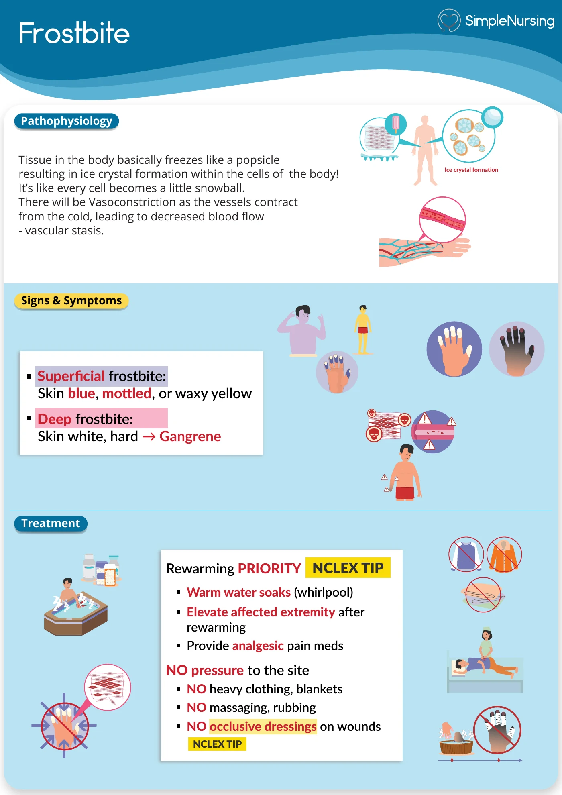
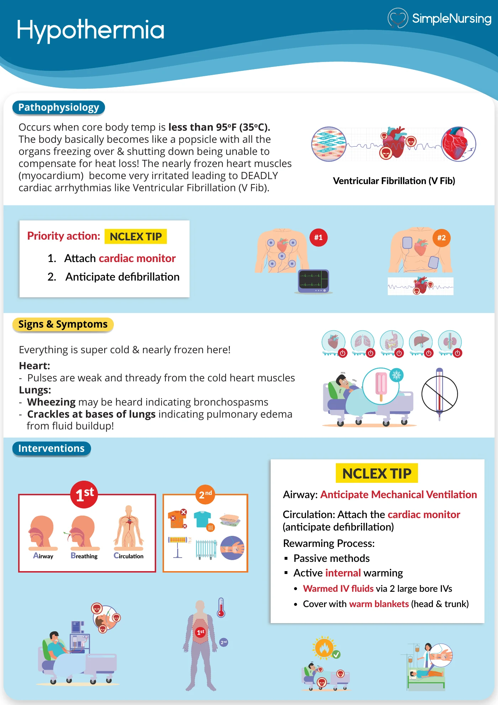

Emergency and Disaster Nursing — Completed
129 slides: all 101 original lecture slides plus 28 answer and clarification slides. Includes the pancreatitis, GI bleeding, and hyperkalemia cases.
Exam 5 · Week 12 · Standalone study page
M12 · Disaster, Mass Casualty & Emergency Nursing
Crystalloid agents · illustrated IV-fluid guide
Normal saline, lactated Ringer’s, Plasma-Lyte, half-normal saline, 3% saline and D5W: what they do, sepsis boluses, and BAG → BODY → BREATHING nursing checks.
Open the crystalloid picture guide ↗This page keeps all of the original course information, while reducing the decision to one module: triage, emergency action and disaster safety.
ECG / EKG rhythm atlas · heart blocks made visible
NUR 258 · MODULE 12 · PLAY & PRACTICE
🚑 Disaster Triage Desk
24 matching prompts, 5 case questions and 4 visual exercises. Four pairs at a time, with saved practice.
Play this module →Module 12 · Content review
Complete the topic review
Use these focused lessons with the detailed condition notes below.
Legal scope, safety and sentinel events
The applicable state/territory Nurse Practice Act and board rules define nursing scope; competence, role, delegation rules and employer policy further constrain an assignment. A disaster does not automatically authorize unfamiliar invasive care or waive licensure rules. Identify formal emergency orders/waivers, use the incident command chain and request qualified supervision or a safe reassignment. Emergency duties also include timely screening/stabilization under applicable law, consent/capacity assessment, privacy, accurate contemporaneous documentation and required reporting. A sentinel event is a serious patient-safety event meeting Joint Commission criteria, including death, permanent harm or severe harm; certain listed events qualify regardless of outcome. Stabilize the patient, preserve facts, notify through the safety process and participate in systems analysis rather than concealment or blame.
Sources: NCSBN Nurse Practice Acts guide · Joint Commission sentinel events; Brunner & Suddarth and the supplied ATI adult medical-surgical/nutrition texts, reconciled with the current guidance linked here.
Primary survey, multisystem trauma and abdominal injury
Use the trauma team’s current survey protocol: control catastrophic external hemorrhage promptly, protect the cervical spine when indicated, assess airway, breathing, circulation, neurologic disability and full exposure with warming. Treat threats as identified and repeat the survey after every deterioration or intervention. The secondary survey adds mechanism, allergies/medications/history and head-to-toe assessment once immediate threats are addressed. Abdominal bleeding can be occult: trend perfusion, mental status, abdominal findings, urine output and serial labs; a normal initial hemoglobin does not exclude acute hemorrhage. FAST/CT or operative evaluation depends on stability and mechanism. Keep the patient NPO, secure access, prepare blood products/procedures and do not remove an impaled object; support it in place.
Brunner & Suddarth and the supplied ATI adult medical-surgical/nutrition texts, reconciled with the current guidance linked here.
Wound assessment, cleaning and closure
Assess mechanism/time, contamination, foreign body, tissue viability, neurovascular/tendon function and tetanus history; control bleeding and provide analgesia. Irrigate with appropriate fluid and remove foreign material/debride devitalized tissue as ordered. Primary closure approximates a suitably clean, viable wound promptly after evaluation; delayed primary closure leaves a contaminated/high-risk wound open initially for cleaning and reassessment, then closes it when infection is absent and conditions permit. Secondary intention is healing without later primary closure. Nursing care includes dressing/protection, pain management, infection surveillance and follow-up instructions; closure decisions are not based on a single universal hour cutoff.
Brunner & Suddarth and the supplied ATI adult medical-surgical/nutrition texts, reconciled with the current guidance linked here.
Tetanus prophylaxis
With a completed primary series, give a booster at 10 years for clean minor wounds or 5 years for dirty/major wounds; no booster is needed if the last dose was under 5 years. Unknown/incomplete vaccination requires vaccination for any wound. Tetanus immune globulin is never indicated for a clean minor wound and is used for selected dirty/major wounds, including unknown/incomplete history or severe immunodeficiency. Clean/debride the wound; antibiotics are not tetanus prophylaxis.
Sources: CDC tetanus wound prophylaxis; Brunner & Suddarth and the supplied ATI adult medical-surgical/nutrition texts, reconciled with the current guidance linked here.
Crush injury and chest-tube priorities
Crush injury can release potassium and myoglobin, causing dysrhythmias, shock, compartment syndrome and acute kidney injury. Coordinate safe extrication and begin resuscitation early when feasible rather than waiting for release; monitor ECG, potassium, renal function, urine, CK and limb neurovascular status. Treat hyperkalemia/compartment syndrome urgently through the trauma team. For a chest tube, assess the patient before the device, keep drainage below chest level and maintain a closed unobstructed system. Intermittent water-seal bubbling can occur as air evacuates; persistent bubbling suggests a leak requiring systematic assessment. Sudden respiratory distress, disconnection or dislodgement needs immediate assistance and the facility’s emergency protocol; do not routinely clamp a bubbling tube.
Brunner & Suddarth and the supplied ATI adult medical-surgical/nutrition texts, reconciled with the current guidance linked here.
Food poisoning
Ask what and when the patient ate, who else is ill, travel/exposure history, stool/vomit features and neurologic symptoms. Most presentations involve vomiting, diarrhea and cramps, but dehydration, bloody stool, high fever or high-risk hosts need further evaluation. Prioritize hydration/electrolytes, renal status and ordered stool/blood tests; use oral rehydration when tolerated and IV fluid when needed. Antibiotics and antidiarrheals are organism- and patient-specific, not routine for every illness. Diplopia, dysphagia, descending weakness or respiratory difficulty after food exposure raises concern for botulism and requires urgent airway/public-health/antitoxin evaluation. Teach hand hygiene, food safety and return precautions; report suspected clusters through the local public-health process.
Brunner & Suddarth and the supplied ATI adult medical-surgical/nutrition texts, reconciled with the current guidance linked here.
Sexual assault, trafficking and psychiatric emergencies
Provide private, trauma-informed care and address urgent injuries first. Obtain consent separately for examination, evidence collection and treatment; explain options and preserve forensic evidence/chain of custody when chosen, without making treatment conditional on a police report. Offer specialist forensic care, pregnancy/STI/HIV risk evaluation and time-sensitive prevention, advocacy and follow-up. For suspected trafficking, speak privately with a qualified interpreter, assess immediate safety without confronting a suspected trafficker and follow applicable age/safety/reporting requirements. For agitation or suicidality, assess medical causes, intoxication and immediate danger; use calm de-escalation and the least restrictive safe intervention. Ask directly about suicidal thoughts, intent, plan and access to means; institute indicated observation and environmental precautions, stay with an imminently unsafe patient, obtain urgent behavioral-health help and complete a direct handoff.
Brunner & Suddarth and the supplied ATI adult medical-surgical/nutrition texts, reconciled with the current guidance linked here.
Disaster ethics and allocation
Disaster allocation balances benefit, fairness, proportionality and available resources. Apply the approved triage/resource-allocation framework consistently; do not rank people by social worth or make unsupported bedside exclusions. Use incident command/ethics consultation for conflicts, document reasons and reassess as resources change. Expectant classification still requires comfort, dignity and reassessment. Nurses also face duty-to-care, personal/family safety and role-boundary conflicts; advance planning, appropriate PPE and a clear escalation process make these decisions safer.
Sources: HHS CHEMM SALT mass-casualty triage; Brunner & Suddarth and the supplied ATI adult medical-surgical/nutrition texts, reconciled with the current guidance linked here.
Outbreak, epidemic, pandemic and natural disasters
An outbreak or epidemic is disease occurrence above what is expected in a population; outbreak often describes a more localized event. A pandemic describes spread across countries/continents, not a guarantee of greater severity. Nursing actions are early recognition of unusual clusters, exposure history, prompt infection prevention, appropriate specimens, reporting and clear risk communication. Natural-disaster planning anticipates injury, unsafe water, displacement, medication interruption, extremes of temperature and access barriers; plan power-dependent equipment, dialysis/oxygen needs, shelter accessibility and family reunification. Use facility incident command and local public-health direction. ASPR manages the Strategic National Stockpile; CDC provides public-health expertise and surveillance support.
Sources: CDC principles of epidemiology: outbreak, epidemic, pandemic · ASPR Center for the Strategic National Stockpile; Brunner & Suddarth and the supplied ATI adult medical-surgical/nutrition texts, reconciled with the current guidance linked here.
Vesicants
Vesicants damage skin, eyes and respiratory mucosa. Sulfur mustard may cause delayed erythema, blisters and eye/airway injury; absence of immediate pain does not exclude exposure. Lewisite can cause immediate pain and systemic arsenic toxicity. Protect rescuers, remove contaminated clothing and follow agent-specific decontamination without vigorous rubbing; prevent hypothermia. Irrigate exposed eyes and provide airway, burn, pain and fluid support as indicated. Sulfur mustard has no specific antidote; lewisite treatment requires specialist toxicology guidance. Phosgene is a pulmonary agent and is different from phosgene oxime.
Sources: CDC sulfur mustard · CDC/NIOSH mustard-lewisite emergency response; Brunner & Suddarth and the supplied ATI adult medical-surgical/nutrition texts, reconciled with the current guidance linked here.
Decontamination purpose and process
Decontamination removes the agent, limits continuing injury and prevents contamination of staff, equipment and the facility. Use controlled hot/warm/cold zones, hazard-appropriate PPE and trained personnel. Remove/bag contaminated clothing; choose dry removal or water-based decontamination according to the agent and exposure, protecting privacy, wounds, eyes and temperature. Prevent contaminated runoff and uncontrolled entry to clean areas. Airway support, major bleeding control and indicated antidotes may need to occur alongside decontamination with suitable responder protection; do not delay all lifesaving treatment until washing is finished.
Sources: HHS CHEMM SALT mass-casualty triage · CDC sulfur mustard; Brunner & Suddarth and the supplied ATI adult medical-surgical/nutrition texts, reconciled with the current guidance linked here.
▸M12Disaster, Mass Casualty & Emergency NursingWeek 12
💡 The one idea
Disaster triage inverts everyday nursing. Normally the sickest patient goes first. In a mass casualty you do the greatest good for the greatest number — so the most critically injured may be passed over.
| Tag | Means | Examples |
|---|---|---|
| 🔴 RED | Immediate — life-threatening but survivable with quick care | Airway obstruction, tension pneumothorax, severe controllable bleeding |
| 🟡 YELLOW | Use the adopted disaster-triage algorithm and current resources, not fixed diagnoses or promised waiting times. Perform designated rapid lifesaving interventions and reassess. SALT separates dead from expectant; expectant patients still receive comfort care and may be reclassified. Everyday emergency triage follows a different system.Original course wordingEarlier study notes, retained for comparison with the guidance above. These notes may reflect a book edition or lecture convention; check the assigned source for exam wording. A patient in cardiac arrest during a mass casualty event is tagged black , not red. Resuscitating one person consumes the staff and time that could save several. | Open fractures, stable abdominal injury |
| 🟢 GREEN | Minimal — “walking wounded” | Minor cuts, sprains; can often help others |
| ⚫ BLACK | Expectant — dead, or injuries incompatible with survival | Use the adopted disaster-triage algorithm and current resources, not fixed diagnoses or promised waiting times. Perform designated rapid lifesaving interventions and reassess. SALT separates dead from expectant; expectant patients still receive comfort care and may be reclassified. Everyday emergency triage follows a different system.Original course wordingEarlier study notes, retained for comparison with the guidance above. These notes may reflect a book edition or lecture convention; check the assigned source for exam wording. Under 60 seconds per casualty. Airway, breathing, circulation and mental status, then tag and move on. Tag colors: red = immediate , life-threatening but survivable with quick intervention; yellow = delayed , can wait 30 to 60 minutes; green = minimal , the walking wounded; black = expectant , injuries incompatible with survival given available resources. In a mass casualty event a client in cardiac arrest is tagged black — resuscitating one uses the people and time that would save several others. Re-triage continually; casualties change category in both directions. |

Original course diagram and current triage reference
The original diagram is retained for course comparison. Its loudness shortcut and omitted airway-response branch differ from the current assessment sequence shown above.
🚨 The counter-intuitive rule
Use the adopted disaster-triage algorithm and current resources, not fixed diagnoses or promised waiting times. Perform designated rapid lifesaving interventions and reassess. SALT separates dead from expectant; expectant patients still receive comfort care and may be reclassified. Everyday emergency triage follows a different system.
This is the opposite of everyday practice, and that is exactly why it is tested.
🛡️ Who gets discharged to make beds
When a disaster is announced, the patients discharged first are the most stable — typically those already awaiting discharge, day-surgery patients, and stable chronic patients.
✅ Decontamination order
You are no use to anyone as a second casualty. Scene safety and your own PPE come before patient contact - every time.

⭐ High-yield — what the exam actually asks
Show 5 moreHide these 5
- Triage tags — RED: life-threatening but survivable with quick intervention. YELLOW: delayed (open or closed fractures, deep lacerations). GREEN: walking wounded. BLACK: expectant or deceased (agonal breathing, exposed brain matter, uncontrolled arterial bleed with major loss). An open fracture is yellow. A controllable arterial bleed is red; an uncontrolled one in an unresponsive client is black.
- Three-tier system: emergent, urgent (treat within
2 hr), non-urgent. ESI runs Level 1 (most urgent) to Level 5. - Sequence is triage → primary survey → secondary survey. Never leave the primary survey until she is stable.
- ABCDE: Airway with C-spine protection, Breathing, Circulation (control hemorrhage now), Disability (GCS/pupils), Exposure (undress fully, then prevent hypothermia). Brain death occurs within
3–5 minwithout an airway. - Secondary survey is head-to-toe after stabilization and includes AMPLE: Allergies, Medications, Past history, Last meal, Events.
Show 5 moreHide these 5
- Tension pneumothorax is diagnosed by assessment — deviated trachea, absent breath sounds, unequal chest rise. Needle decompression first, then chest tube. Do not wait for imaging. Picture it →
- Chest tubes: tidaling is expected; water-seal bubbling means an air leak; never clamp during transport; keep the system below chest level. Disconnected → sterile water seal. Pulled out → occlusive dressing taped on three sides.
- Coordinate early resuscitation before extrication when feasible and continue after release; monitor potassium/ECG, renal function, urine and compartment findings. Do not make release a prerequisite to supportive care.
Original course wording
Earlier study notes, retained for comparison with the guidance above. These notes may reflect a book edition or lecture convention; check the assigned source for exam wording.
Intra-abdominal injury: rigid distended abdomen, guarding, Kehr's sign (referred shoulder pain = splenic injury). Crush injury : myoglobin causes AKI — aggressive fluids once the force is released. Tetanus prophylaxis if the last dose was 5–10 years ago.
- Heat stroke: core
>104°Fwith altered mental status → rapid cooling plus IV fluids. Hypothermia: core<95°F→ handle gently, a cold heart is irritable. Frostbite: warm (not hot) water immersion, never rub, never rewarm if refreezing is possible. - Call the poison center/toxicology service and treat the actual agent/exposure. Charcoal is useful only for selected ingestions with an adequately protected airway; many agents are not bound. Gastric lavage has very limited specialist-directed indications and is not routine treatment based only on time.
Original course wording
Earlier study notes, retained for comparison with the guidance above. These notes may reflect a book edition or lecture convention; check the assigned source for exam wording.
Activated charcoal works for medications within 1–2 hours . Not for corrosives or hydrocarbons, and not without a protected airway.
Show 5 moreHide these 5
- Give thiamine when indicated, but do not delay glucose for hypoglycemia; the two can be given concurrently or in either order.
Original course wording
Earlier study notes, retained for comparison with the guidance above. These notes may reflect a book edition or lecture convention; check the assigned source for exam wording.
Antidotes : naloxone for opioids (watch for re-sedation), N-acetylcysteine for acetaminophen, flumazenil for benzos (can precipitate seizures), vitamin K for warfarin, protamine sulfate for heparin. Alcohol intoxication: airway and side-lying, and thiamine before glucose in chronic drinkers.
- Arrange immediate medical evaluation and poison/toxicology guidance. Give antivenom promptly when indicated; do not wait for a 4–12-hour window. Keep the patient calm and limb comfortably positioned, remove constricting items, and avoid cutting, suction, ice and tourniquets. Steroids/heparin are not routine snakebite treatment after an arbitrary delay.
Original course wording
Earlier study notes, retained for comparison with the guidance above. These notes may reflect a book edition or lecture convention; check the assigned source for exam wording.
Snakebite : keep her still, limb at or below heart level, remove jewelry. No ice, tourniquet, cutting, heparin or steroids in the first 6–8 hours . Antivenom within 4–12 hr . Assess edema q15–30 min .
- Sexual assault: safety and consent at every step, SANE examiner, preserve evidence but never delay care. Human trafficking red flag: a companion who will not leave the room or answers for her — interview alone with a professional interpreter.
- Psychiatric emergency: de-escalate first; restraints are a last resort requiring an order and frequent reassessment. The ED is the #1 setting for staff abuse — document everything.
- ASPR manages the Strategic National Stockpile; requests flow through the designated emergency/public-health coordination process.
Original course wording
Earlier study notes, retained for comparison with the guidance above. These notes may reflect a book edition or lecture convention; check the assigned source for exam wording.
Agencies: FEMA coordinates federal response; CDC handles surveillance and the Strategic National Stockpile; OSHA sets PPE standards; The Joint Commission requires an emergency operations plan; HICS is the hospital chain of command. Follow your assigned task only.
Show 2 moreHide these 2
- Routine care uses standard precautions; add contact precautions for uncontained cutaneous-lesion drainage. Decontaminate external powder contamination using the incident protocol. Distinguish infection-control precautions from exposure decontamination.
Original course wording
Earlier study notes, retained for comparison with the guidance above. These notes may reflect a book edition or lecture convention; check the assigned source for exam wording.
Anthrax is bacterial and NOT person-to-person — no isolation. Cutaneous, inhalation and ingestion routes; ciprofloxacin or penicillin. Smallpox (airborne) and plague (droplet) ARE transmissible. Nerve agents: decontaminate with soap and water or saline for ≥20 min — blot, do not wipe . Inhaled toxic chemicals cause pulmonary edema → intubate, not a chest tube.
- Use appropriate responder protection and controlled decontamination while providing necessary immediate airway, hemorrhage and antidote interventions. Agent, dose and route determine the decontamination method.
Original course wording
Earlier study notes, retained for comparison with the guidance above. These notes may reflect a book edition or lecture convention; check the assigned source for exam wording.
Decontamination : remove all clothing and jewelry first (that alone removes most contamination), then copious head-to-toe irrigation, in a dedicated decon zone before entering the treatment area. Contain the runoff.
🎧 From the exam-prep recording
What the faculty actually said in the review session for this week — their numbers, their worked calculations, their priority rulings. On an exam, this beats the textbook.
Show 3 moreHide these 3
- Anthrax: IV ciprofloxacin. With hypotension and distress the first action is large-bore access and rapid isotonic fluids.
- Carbon monoxide: the SpO2 is worthless. It reads 98% on room air while she is poisoned, because the probe cannot tell oxyhemoglobin from carboxyhemoglobin. You need a blood carboxyhemoglobin level. Treatment is 100% oxygen by non-rebreather. Symptoms are mostly neurologic — headache and dizziness first.
- Nerve agent / cholinergic crisis — copious secretions, twitching, respiratory distress: atropine + pralidoxime + benzodiazepines for seizure risk, plus soap-and-water decontamination. Avoid plastic airway equipment, because plastic absorbs the agent.
Show 5 moreHide these 5
- Frostbite is graded like burns. Clear blisters = second degree → rewarm in a water bath around
105–106°F, opioids for pain. Tetanus boosters every 10 years — but every 5 years if there is an open wound. - Disaster triage vs everyday ESI: in ESI, level 1 (the sickest) goes first. In mass casualty that same person may be black-tagged. You are hunting the red tag, not the black one.
- Their field cutoffs: RR under 10 or over 30 is abnormal (10–29 acceptable) · cap refill over 2 seconds or pulse over 120 = red. No blood pressures — there is no time.
- Their worked tag assignments: unconscious, RR 8, no pulse → black · walking wounded → green · RR 30 + cap refill >2 s + cannot follow commands → red · open femur fracture with stable vitals → yellow · chest burns with hoarseness and stridor → red · massive head trauma with agonal respirations → black · superficial forearm burn, alert → green.
- Call the poison center/toxicology service and treat the actual agent/exposure. Charcoal is useful only for selected ingestions with an adequately protected airway; many agents are not bound. Gastric lavage has very limited specialist-directed indications and is not routine treatment based only on time.
Original course wording
Earlier study notes, retained for comparison with the guidance above. These notes may reflect a book edition or lecture convention; check the assigned source for exam wording.
Ingestion matrix : corrosive → endoscopy , no charcoal and no lavage · non-corrosive within 45 min → activated charcoal (the stomach empties in about 2 hours ) · 3 hours out with stable vitals → supportive care only · known antidote → give the antidote. We never induce vomiting.
Show 3 moreHide these 3
- Trauma with BP 60/palp and HR 144: two large-bore 18-gauge IVs and fluids. Not CT, not an NG tube.
- Suicide attempt: constant observation, remove hazards, talk to her without family present, ask about suicide directly — the old “don’t say the word” belief is out — and crisis intervention now. They described a nurse who stayed with a client for ten hours outside the room: constant observation means constant. Individual therapy is not appropriate until the crisis is stabilized.
- Calc: oxacillin 375 mg from 250 mg/1.5 mL =
2.3 mL. Their sanity check: "I'm giving more than I have, so my volume must exceed 1.5 mL."
Show 4 moreHide these 4
- Glasgow Coma Scale runs 3 to 15 — it never starts at zero. 15 is alert and oriented. 8 or less means she is not protecting her airway: intubate. “GCS of 8, intubate” is the phrase to hold on to.
- The direction matters more than the number. A GCS climbing from 10 to 14 is what you want. A falling GCS is the emergency, whatever the starting value.
- Evisceration: cover the exposed bowel with sterile saline-moistened gauze, position supine with the knees flexed to take tension off the abdomen, nothing by mouth. Never dry gauze, never open to air, never push the bowel back in. If the vital signs are unstable, resuscitation still outranks the dressing.
- Arrange immediate medical evaluation and poison/toxicology guidance. Give antivenom promptly when indicated; do not wait for a 4–12-hour window. Keep the patient calm and limb comfortably positioned, remove constricting items, and avoid cutting, suction, ice and tourniquets. Steroids/heparin are not routine snakebite treatment after an arbitrary delay.
Original course wording
Earlier study notes, retained for comparison with the guidance above. These notes may reflect a book edition or lecture convention; check the assigned source for exam wording.
Snake bite, what is contraindicated: a tourniquet, ice, cutting and sucking the wound, and alcohol. Keep the limb below heart level , immobilize it, remove rings and watches early, mark the leading edge of the swelling with the time , and give antivenom within 4 to 12 hours if indicated.
Show 5 moreHide these 5
- Triage rule: unstable vital signs beat everything else on the list. If any option mentions resuscitation, that is the priority.
- Put yourself in the room. Their repeated advice: picture the scene before reading the options. You would not walk to the cupboard for supplies before covering an open abdomen, and you would not call the provider before doing what you can.
- Cutaneous anthrax — they flagged the image as one worth recognizing, because it changed a real patient’s management on their unit.
- Use appropriate responder protection and controlled decontamination while providing necessary immediate airway, hemorrhage and antidote interventions. Agent, dose and route determine the decontamination method.
Original course wording
Earlier study notes, retained for comparison with the guidance above. These notes may reflect a book edition or lecture convention; check the assigned source for exam wording.
Radiation, chemical and biological exposure: decontaminate before the patient enters the department, and protect the staff first — you are no use to anyone contaminated.
- In any mass casualty question, the resource is the constraint. The answer is what saves the most people with what is actually available, not what is best for one person.
⚠️ Exam traps
- Disaster triage optimizes for the greatest good for the greatest number — which can mean not treating the sickest client.
- Yellow vs green hinges on wound depth and mobility, not on which injury sounds worse.
- Routine care uses standard precautions; add contact precautions for uncontained cutaneous-lesion drainage. Decontaminate external powder contamination using the incident protocol. Distinguish infection-control precautions from exposure decontamination.
⚠️ What it turns into — the complication for each one
The disorder cards below run definition, causes, signs, diagnostics, management and nursing. This is the part they do not have, and it is where the exam lives: so what happens if this is missed or left? Here the complication is often a system failing rather than a body failing — and the responder becoming a casualty is a real one.
| Disorder | What it turns into |
|---|---|
| Triage and mass casualty response | Over-triage floods the resources and under-triage kills the salvageable. Staff injury, and the moral distress of leaving expectant clients — which is the right decision and still causes harm to the nurse making it |
| Bioterrorism agents | Mass casualties, secondary contamination of the responders and the department, delayed recognition because the first cases look ordinary, and public panic outstripping the actual exposure |
| Poisoning and overdose | Aspiration and airway loss, dysrhythmia, seizures, and hepatic failure from acetaminophen — which is silent for the first day. After naloxone, re-sedation once it wears off before the opioid does |
| Environmental emergencies | Heat stroke into rhabdomyolysis, acute kidney injury, DIC and death. Hypothermia into dysrhythmia and afterdrop during rewarming. Frostbite into tissue loss. Drowning into ARDS hours later. Anaphylaxis from stings |
| Emergency preparedness and the nurse's role | Communication breakdown, supplies and staff not where they were assumed to be, and nurses unable to come in because their own families are affected |
🚑 Disaster and emergency nursing, section by section
Triage first, because the rules invert in a mass casualty event, then the agents, poisons and environmental emergencies, then your own role in the plan. Same six sections every time.
Triage and Mass Casualty ResponseThe rules invertOpenClose
Definition and Overview
Sorting clients so that limited resources do the most good. Everyday emergency department triage treats the sickest person first. Mass casualty triage does the opposite: it treats those most likely to survive with the resources available, and gives comfort care only to those who will not. That inversion — from 'sickest first' to 'greatest good for the greatest number' — is the single most tested idea in this module.
Causes and Risk Factors
A mass casualty incident is any event where the casualties overwhelm what is available: natural disasters, transport crashes, fires, explosions, shootings, industrial accidents, chemical release, and pandemics. What makes an event a disaster is the mismatch between need and resources, not the raw number of casualties.
Clinical Manifestations
In everyday emergent (red) triage: airway compromise, respiratory distress, chest pain with cardiac features, active hemorrhage, altered consciousness, stroke symptoms, unstable vital signs. Urgent (yellow): severe pain, open fractures, moderate bleeding, high fever. Non-urgent (green): sprains, minor wounds, chronic complaints. In mass casualty START triage the assessment is deliberately crude and fast: can they walk (green); respiratory rate over 30; capillary refill over 2 seconds or absent radial pulse; can they follow a simple command.
Assessment and Diagnostic Findings
Use the adopted disaster-triage algorithm and current resources, not fixed diagnoses or promised waiting times. Perform designated rapid lifesaving interventions and reassess. SALT separates dead from expectant; expectant patients still receive comfort care and may be reclassified. Everyday emergency triage follows a different system.
Medical Management
Incident command activates the facility's emergency operations plan. Decontamination before entry where indicated. Surge capacity: discharge or transfer stable inpatients, cancel elective surgery, open alternative care areas, call in staff. Definitive care follows priority order. Family reunification and behavioral health support are part of the plan, not an afterthought.
Nursing Management and Client Education
Know where your facility's disaster plan is and what your role in it is before the day it is needed. Tag, document briefly, and keep moving — the commonest failure is a nurse stopping to give full care to the first casualty they meet. Reassess the yellow and green groups regularly. Delegate within scope: the walking wounded can be put to work holding pressure and comforting others. Expect and plan for the psychological toll on staff — debriefing and critical incident stress support are standard care, not weakness. Teach families about personal preparedness: a kit with water, food, medications, copies of prescriptions and documents, a plan for meeting, and an out-of-area contact.
Bioterrorism AgentsOpenClose
Definition and Overview
Deliberate release of biological agents to cause harm. The Category A agents are the priority ones — easily disseminated or transmitted person to person, high mortality, and capable of causing public panic: anthrax, smallpox, plague, botulism, tularaemia and the viral hemorrhagic fevers. Recognizing an outbreak early is a nursing function, because nurses see the first cases.
Causes and Risk Factors
Deliberate release through air, water, food or mail. Suspect it when there is a cluster of unusual illness — the wrong disease, in the wrong season, in the wrong population, in unexpected numbers, or a disease not seen in the area at all. Health care workers, first responders and laboratory staff are at particular risk.
Clinical Manifestations
Inhalational anthrax: flu-like illness for a few days, then abrupt severe respiratory distress and shock, with a widened mediastinum on chest x-ray. Not spread person to person. Smallpox: high fever and prostration, then a rash that starts on the face and limbs and spreads inward, with all lesions at the same stage — that is what distinguishes it from chickenpox, where lesions are at different stages and start centrally. Pneumonic plague: abrupt fever, cough, hemoptysis, rapid respiratory failure. Botulism: descending symmetrical flaccid paralysis with double vision, drooping lids, slurred speech and difficulty swallowing, and a fully alert client with no fever.
Assessment and Diagnostic Findings
Report a suspected case to the health department immediately — notification is part of the assessment, not something that happens later. Cultures and specific testing through public health laboratories; chest x-ray; and a careful exposure history including travel, occupation, mail and contacts. Continuous respiratory and neurological assessment, since these agents kill through the airway.
Medical Management
Anthrax: ciprofloxacin or doxycycline, for treatment and for post-exposure prophylaxis of contacts. Smallpox: vaccination within 4 days of exposure can prevent or lessen disease; supportive care otherwise. Plague: streptomycin, gentamicin or doxycycline, with prophylaxis for close contacts. Botulism: antitoxin, which stops progression but does not reverse existing paralysis, plus ventilatory support that may last weeks.
Nursing Management and Client Education
Match the precautions to the agent and get them on before the diagnosis is confirmed. Smallpox and viral hemorrhagic fevers need airborne and contact precautions; pneumonic plague needs droplet precautions; anthrax and botulism need standard precautions, because neither spreads person to person. Decontaminate before the client enters the department where there is a powder or liquid exposure: remove clothing (which removes most of the contamination), bag it as evidence, and shower with soap and water. Wear appropriate protective equipment and do not improvise it. Do not enter a contaminated area without training and protection — a contaminated rescuer becomes a second casualty and contaminates the department. Support clients through the isolation and the fear, and teach that prophylactic antibiotics must be completed in full — for anthrax, that is 60 days.
Poisoning and OverdoseOpenClose
Definition and Overview
Injury from a substance taken by mouth, inhaled, injected or absorbed, whether accidentally or deliberately. The immediate work is support the airway, breathing and circulation; identify the substance; limit further absorption; and give an antidote if one exists — and most poisons have no antidote, so supportive care is the treatment.
Causes and Risk Factors
In children, unsecured household products and medicines. In adolescents and adults, deliberate self-harm and recreational drug use. In older adults, therapeutic error — a duplicate dose, a confused regimen, or a drug interaction. Also carbon monoxide from faulty heating, occupational chemical exposure, plants and mushrooms, and alcohol.
Clinical Manifestations
Depends entirely on the agent, so learn the patterns. Opioids: pinpoint pupils, respiratory depression, coma. Anticholinergics: hot, dry, flushed, dilated pupils, confused, retention — 'mad as a hatter, dry as a bone'. Cholinergics or organophosphates: salivation, lacrimation, urination, defecation, GI upset, emesis, plus bradycardia and small pupils. Acetaminophen: nothing much for the first 24 hours, then nausea and right upper quadrant pain, then liver failure — a well-looking client after an overdose is not reassuring. Salicylates: tinnitus, hyperventilation, fever, then mixed acid–base disturbance. Carbon monoxide: headache, nausea, confusion, with a falsely normal pulse oximetry reading.
Assessment and Diagnostic Findings
Call the poison control center — they direct management, and the number belongs in your teaching too. Establish what, how much, when and by what route, and look for the container. Acetaminophen level at 4 hours post-ingestion plotted on the Rumack–Matthew nomogram. Salicylate level, ABGs, electrolytes and anion gap, glucose, creatinine, liver function, ECG, and a carboxyhemoglobin level where relevant. Continuous monitoring of airway, breathing, circulation and level of consciousness.
Medical Management
Support first: airway, oxygen, IV access, glucose, and treat seizures. Limit absorption with activated charcoal, useful within about an hour and only in an alert client with a protected airway; whole-bowel irrigation for some agents; and copious irrigation for skin or eye exposure. Antidotes to know: naloxone for opioids, N-acetylcysteine for acetaminophen, flumazenil for benzodiazepines (used cautiously), atropine and pralidoxime for organophosphates, and 100% oxygen for carbon monoxide. Sodium bicarbonate for salicylates and tricyclics. Hemodialysis for some.
Nursing Management and Client Education
Airway before antidote. Position on the side if the client is drowsy and vomiting. Do not induce vomiting, and do not give syrup of ipecac — it is no longer recommended, and it is dangerous with corrosives and hydrocarbons. Naloxone wears off before most opioids do, so keep monitoring for re-sedation and expect acute withdrawal — agitation, vomiting, pain — when it works. Give N-acetylcysteine even if the client looks well; it is most effective within 8 hours. Save containers and specimens; document precisely, since this may become a legal matter. Every intentional overdose gets a suicide risk assessment, one-to-one observation and a mental health referral — do not treat the poisoning and discharge the person. Teach prevention: the poison control number on the fridge, locked and original containers, safe storage away from food, working carbon monoxide detectors, and a medication review for older adults.
Carbon Monoxide Poisoning
Simple Nursing original handout · saved in your Drive.

Read the full PDF here
Environmental EmergenciesOpenClose
Definition and Overview
Injuries caused by heat, cold, water or animals. They share a pattern: remove the person from the exposure, correct the core problem gradually rather than abruptly, and expect the body to behave badly while you do. Heat and cold emergencies in particular are far more dangerous in the very young, the very old and the chronically ill.
Causes and Risk Factors
Heat: exertion in high heat and humidity, age extremes, obesity, dehydration, alcohol, cardiovascular disease, and drugs that impair sweating — anticholinergics, antihistamines, beta blockers, diuretics and antipsychotics. Cold: homelessness, alcohol, immersion, inadequate clothing, hypothyroidism, immobility and age extremes. Drowning: inability to swim, alcohol, seizures, and unsupervised children near water. Bites and stings: outdoor exposure; known allergy makes a sting an anaphylaxis risk.
Clinical Manifestations
Heat exhaustion: heavy sweating, weakness, nausea, headache, tachycardia, normal or slightly raised temperature and an intact mental state. Heat stroke: core temperature above 104°F (40°C), hot skin that is often dry because sweating has stopped, and altered mental status — confusion, seizures, coma. That change in mental status is what separates heat stroke from heat exhaustion, and it is a true emergency. Hypothermia: shivering that stops as it worsens, slurred speech, clumsiness, confusion, bradycardia and bradypnoea, then rigidity and apparent death. Frostbite: white waxy hard skin, numb at first and intensely painful on rewarming.
Assessment and Diagnostic Findings
Core temperature with a low-reading or esophageal thermometer — an ordinary oral thermometer cannot measure a hypothermic client. Continuous cardiac monitoring, because the cold heart is irritable and prone to ventricular fibrillation. Electrolytes, glucose, creatine kinase for rhabdomyolysis in heat stroke, coagulation studies, ABGs, and hourly urine output. Neurological status throughout.
Medical Management
Heat stroke: cool rapidly — remove clothing, cold water immersion or evaporative cooling with mist and fans, ice packs to the groin, axillae and neck, cooled IV fluids, and stop active cooling around 102°F (39°C) to avoid overshoot. Hypothermia: rewarm gradually — passive external warming for mild cases, active external and then core rewarming with warmed fluids, humidified oxygen and lavage for severe ones. Frostbite: rapid rewarming in circulating water at 98–104°F, analgesia, tetanus prophylaxis, and delayed debridement.
Nursing Management and Client Education
Do not give antipyretics for heat stroke — the hypothalamic set point is normal, so paracetamol and aspirin do nothing and add liver and bleeding risk. Handle a hypothermic client gently: rough movement can trigger ventricular fibrillation. Nobody is dead until they are warm and dead — continue resuscitation through rewarming. For frostbite, never rub or massage the tissue, and never rewarm if there is any chance of refreezing — a thaw–refreeze cycle destroys more tissue than staying frozen. Monitor for compartment syndrome and rhabdomyolysis. Teaching is prevention: hydration and pacing in heat, checking on older neighbours during a heatwave, layered clothing and covered extremities in cold, life jackets and constant supervision around water, and an auto-injector for anyone with a known sting allergy.
Visual references for this topic
 HypothermiaExam 5 · Study page →
HypothermiaExam 5 · Study page →Preview here
 FrostbiteExam 5 · Study page →
FrostbiteExam 5 · Study page →Preview here

Frostbite📄 Simple Nursing · Opens in Drive →Read the full PDF here

Hypothermia📄 Simple Nursing · Opens in Drive →Read the full PDF here
Emergency Preparedness and the Nurse's RoleOpenClose
Definition and Overview
The planning, training and legal framework that lets a facility function when the day comes. It runs in four phases — mitigation, preparedness, response and recovery — and it is organized through the Incident Command System, a defined chain of command with one person in charge and a clear role for everybody else.
Causes and Risk Factors
Every facility is required to have a plan and to exercise it. The things that make a response fail are predictable: staff who do not know their role, communication that breaks down, supplies and surge capacity that were never counted, no plan for staff families, and no provision for the psychological aftermath.
Clinical Manifestations
What a failing response looks like: nobody knows who is in command, staff self-deploy to where they feel useful rather than where they are assigned, documentation stops, families cannot find their people, and staff work past exhaustion without relief. Afterwards, watch for acute stress reactions and post-traumatic stress in staff and clients alike — sleep disturbance, intrusive memories, irritability, withdrawal and guilt.
Assessment and Diagnostic Findings
Know before the event: where the plan is, what your assigned role is, where supplies and personal protective equipment are kept, the evacuation routes, and how communication works when phones and networks fail. During the event, assess continually: casualty numbers and categories, staffing, supplies, bed capacity and safety of the environment. Afterwards, the debrief is an assessment too — what worked and what did not.
Medical Management
Activation of the emergency operations plan and incident command. Surge capacity: early discharge, cancelling elective work, opening alternative sites. Mutual aid agreements between facilities. Under crisis standards of care, the standard shifts explicitly from the individual to the population, and that shift is declared, documented and time-limited — not improvised at the bedside. Recovery includes restoring services, restocking, and reviewing the response formally.
Nursing Management and Client Education
Your role in the plan is something to know now, not to look up during the event. Follow the chain of command and do not self-deploy. Have a personal and family plan — childcare, elder care, pets, transport — because a nurse who cannot leave home safely cannot come to work. Document even briefly; triage tags and times matter afterwards. Delegate within scope and use unlicensed personnel and volunteers deliberately. Take the breaks, eat, drink and accept relief — and hold colleagues to the same, because fatigue causes the errors. Afterwards, attend the debriefing and take critical incident stress support seriously; distress after a disaster is a normal response to an abnormal event, and untreated it ends careers. Teach clients and families household preparedness: an emergency kit, at least a week of medication, copies of prescriptions and documents, a meeting place, and an out-of-area contact who is easier to reach than a local one.
🧠 Mind maps 1
One per disorder, built from the structure of your ATI chapter.
🎯 Who gets it
- Children under
5 yearsold face the highest accidental poisoning risk. - Mid-to-late childhood kids face the highest snakebite risk.
- Vulnerable clients face higher risk of trafficking exploitation.
👀 What you see
- Heatstroke: temperature above
40° C (104° F)with altered mental status. - Heatstroke may show abnormal blood potassium or sodium levels.
- Frostbite severity may not be clear until up to
24 hrafter injury.
🩺 What you do
- Use head-tilt/chin-lift only when no cervical spine injury is suspected.
- Use a modified jaw thrust if trauma is suspected, to protect the spine.
💬 What you teach
- Stay indoors with fans or AC during periods of high heat.
- Limit alcohol and caffeine intake in hot weather.
Read left to right: who gets it → what you see → what confirms it → what you do → what goes wrong. Cover a column and rebuild it out loud.
📊 Lecture slides 1
The deck this module is built on.
🎥 Lecture recordings 5
Tap a card to open that recording in Google Drive. The same list lives in the lecture library.
All NUR 258 recordings →🖼️ Triage at a glance 1
There is no separate disaster page on this site yet, so rather than link you to nothing, here is the chart itself.
| Tag | Means | Who |
|---|---|---|
| RED Immediate | Life-threatening but survivable with rapid intervention | Airway obstruction, tension pneumothorax, severe hemorrhage, shock that responds |
| YELLOW Delayed | Serious, but can wait hours | Stable abdominal injury, large fractures, burns without airway involvement |
| GREEN Minimal | The walking wounded | Minor lacerations, sprains, small burns — and they can help |
| BLACK Expectant | Dead, or injuries incompatible with survival given available resources | Massive head injury, full-thickness burns over most of the body, no respirations after airway repositioning |
🚨 This is the part that feels wrong and is right
In everyday nursing the sickest client is seen first. In a mass casualty that reverses: the goal is the greatest good for the greatest number, so the client who would consume enormous resources with little chance of survival is tagged expectant and the salvageable are treated first.
The walking wounded are moved out first — not because they matter least, but because clearing them lets you find everyone else.
Visual references by topic 4
Pictures and original handouts are filed beside their topics. These shortcuts open the right section.
📋 Active Learning Templates 1
One per disorder. Every row is filled from that section of the ATI chapter — print it, cover the right, rebuild it.
📋 Emergency Nursing Principles and Management6 parts
Filled from ATI chapter 3, row by row from that chapter’s own sections — 12 of 12 rows have content.
7 rows came from outside your ATI chapter — 1 cite a source, 6 are built from this page’s own notes. Each one is labeled.
🧭 What it isAlterations in Health (Diagnosis) · Health Promotion & Disease Prevention
Alterations in Health (Diagnosis)
- This chapter covers ED triage systems, the ABCDE primary survey, secondary survey steps, and management of heat/cold injuries, poisoning, overdose, trauma, maltreatment, psychiatric crises, and cardiac emergencies.
Health Promotion & Disease Prevention
From this module — built from the notes above on this page, not a section of the ATI chapter.
- Most emergency presentations are preventable injury — seat belts, helmets, fall prevention, safe firearm and medication storage.
- Teach CPR and bleeding control widely; bystander action decides survival before anyone arrives.
- Community education on stroke and heart attack warning signs and calling early — time is the whole treatment.
- Disaster preparedness at home: water, medicines, a plan, and a meeting point.
- Violence screening and referral, since the emergency department is often the only contact point.
👀 How it shows upAssessment — Risk Factors · Assessment — Expected Findings
Assessment — Risk Factors
- Trauma victims risk hypothermia from exposure, cold oxygen, and cold IV fluids.
- Children under
5 yearsold face the highest accidental poisoning risk. - Mid-to-late childhood kids face the highest snakebite risk.
- Vulnerable clients face higher risk of trafficking exploitation.
- A history of substance misuse raises trafficking vulnerability.
Assessment — Expected Findings
- Hypothermia: shivering, impaired judgment, dysarthria, and drowsiness are common signs.
- Heatstroke: temperature above
40° C (104° F)with altered mental status. - Heatstroke may show abnormal blood potassium or sodium levels.
- Frostbite severity may not be clear until up to
24 hrafter injury. - Full-thickness frostbite shows dark blisters, necrosis, and possible eschar.
- Deep-tissue frostbite can cause gangrene and may require amputation.
- Opioid poisoning: pinpoint pupils, low blood pressure, respiratory depression, and hypoxia.
- Snakebite: pain, nausea, vomiting, numbness, and paresthesia at the site.
🧪 How it is confirmedLaboratory Tests · Diagnostic Procedures
Laboratory Tests
- Point-of-care glucose on every altered mental status — it is fast, reversible, and missed embarrassingly often.
- Type and crossmatch early in trauma; do not wait for the hemoglobin.
- Lactate for occult shock and sepsis; arterial blood gas for ventilation.
- Troponin, electrolytes, renal function, coagulation studies and toxicology as indicated.
- Pregnancy test in any person of childbearing potential before imaging or medication.
Diagnostic Procedures
- Primary survey: A B C D E — airway with cervical spine, breathing, circulation, disability, exposure. Fix each before moving on.
- Secondary survey — head-to-toe, plus a full history.
- Triage sorts by acuity, not arrival. In mass casualty the priority inverts to the greatest good for the greatest number.
- FAST ultrasound for free fluid; imaging directed by mechanism.
- Continuous monitoring — ECG, oximetry, capnography.
🩺 What you doNursing Care · Medications · Therapeutic Procedures
Nursing Care
- Airway comes first; brain injury or death can occur within
3 to 5 minwithout a patent airway. - Use head-tilt/chin-lift only when no cervical spine injury is suspected.
- Use a modified jaw thrust if trauma is suspected, to protect the spine.
- Apply direct pressure for bleeding first; use a tourniquet proximally if that fails.
- Insert large-bore IVs in both antecubital areas unless a limb is injured.
- A GCS under
8means serious brain injury; a full score of15is expected. - AVPU is a quick consciousness check: Alert, Voice, Pain, Unresponsive.
- Contact poison control at
800-222-1222for suspected poisoning. - Gastric lavage is only useful within
1 hrof ingestion.
Medications
- Epinephrine IM for anaphylaxis, first and immediately. Never delay it for an antihistamine or a steroid.
- Naloxone for opioid toxicity; dextrose for hypoglycemia.
- Isotonic fluid for shock; blood products in hemorrhage — and blood, not crystalloid, is the resuscitation fluid for bleeding.
- Tetanus prophylaxis for wounds; analgesia early rather than withheld pending diagnosis.
- Reversal agents: vitamin K and prothrombin complex for warfarin, idarucizumab for dabigatran.
Therapeutic Procedures
Not in your ATI chapter — filled from StatPearls, 2023.
- Triage nurses use the Emergency Severity Index to sort patients into five acuity levels within about a minute.
- Level 1 marks a patient who needs an immediate life-saving intervention such as airway or hemodynamic support.
- Level 2 covers high-risk, confused, or severely distressed patients, or stable patients with markedly abnormal vital signs.
- Levels 3 through 5 are set by how many hospital resources the visit is expected to require.
StatPearls (NCBI Bookshelf) · Emergency Department Triage · open the source →
💬 Around the patientClient Education · Interprofessional Care
Client Education
- Wear lightweight, loose clothing and avoid excess sun to prevent hyperthermia.
- Stay indoors with fans or AC during periods of high heat.
- Limit alcohol and caffeine intake in hot weather.
- Apply sunscreen rated at least
SPF 30before going outside. - Take a cool shower or bath if the client feels overheated.
- For frostbite, rewarm in a warm, not hot, bath to restore circulation.
- Do not rub or massage frostbitten skin, even if it feels numb.
Interprofessional Care
- Trauma team with assigned roles agreed before the patient arrives.
- Pharmacist at the bedside for resuscitation dosing.
- Blood bank and the massive transfusion protocol.
- Social work, chaplaincy and a dedicated family liaison, separate from the resuscitating nurse.
- Forensic and law enforcement where evidence must be preserved — and evidence is never discarded with the clothing.
- Debrief the team afterwards, every time.
⚠️ What goes wrongComplications
Complications
- Missed injury — the reason for the secondary survey and repeated reassessment.
- Airway loss in burns, anaphylaxis and facial trauma; intubate early rather than late.
- Hypothermia in trauma, which worsens coagulopathy and acidosis — the lethal triad.
- Compartment syndrome, which presents as pain out of proportion and pain on passive stretch.
- Medication error under time pressure; wrong-patient error when identification is rushed.
📝 Notes & key concepts
Additional lecture and study notes.
- Evisceration: saline-moistened sterile gauze, supine with knees flexed. Never dry gauze, never reinsert organs, never leave it open to air.
🎯 Module quiz
Questions for this module. They also feed the Mega Quiz.
Nothing here yet — drop it in when you have it📖 Expanded Module 12 study guide
Read the new download right here: 14 topic groups, comparison tables, clinical priorities, and the questions actually captured in the PDF.
The downloaded PDF identifies itself as a ChatGPT-generated study guide based on the Module 12 PowerPoint and Brunner & Suddarth. It is supplemental study material, not an instructor answer key. Its source claims are reproduced below; they have not been independently matched slide by slide. The guide explicitly says the professor’s lecture transcript was unavailable.
Open original PDF ↗Practice-question note: All 15 questions are present. The PDF’s interactive answer panels did not print; explanations below are newly added Study Hub teaching notes.
About the downloaded guide and its stated sources
NUR 258 – Module 12: Emergency & Disaster Nursing
Comprehensive NCLEX & Exam Study Guide
Primary source: Module 12 PowerPoint, Emergency Nursing, Disaster Preparedness STUDENT (101 slides)
Supporting readings: Brunner & Suddarth's Textbook of Medical-Surgical Nursing, 15th Edition — Chapter 67 (Emergency Nursing) and Chapter 68 (Disaster Nursing).
Source note: I located the 101-slide PowerPoint, but I could not locate the professor's lecture transcript among the accessible project files. This guide follows the actual PowerPoint sequence, incorporates its three emergency department case studies, and fills in important clinical and NCLEX details. I have not attributed any additional emphasis to the professor without the transcript.
How to study this module
The PowerPoint emphasizes four major areas:
- Emergency nursing priorities: Triage, primary and secondary surveys, airway protection, hemorrhage control, shock, and
- multisystem trauma.
- Specific emergencies: Heat and cold injuries, poisoning, overdose, sexual assault, human trafficking, and psychiatric
- emergencies.
- Clinical judgment: Three emergency department cases involving suspected pancreatitis and shock, gastrointestinal
- hemorrhage, and missed dialysis with hyperkalemia.
- Disaster nursing: Mass casualty triage, personal protective equipment (PPE), biological and chemical agents, blast injuries,
- radiation exposure, and decontamination.
Throughout the guide, pay particular attention to first nursing action, expected findings, priority interventions,
contraindicated actions, and differences between similar conditions.
Part 1. Foundations of Emergency Nursing
PPT slides 4–22
1. Emergency nursing principles
Emergency nursing involves rapid assessment, stabilization, treatment, reassessment, and coordination of care for patients with actual or potential life-threatening conditions.
The emergency nurse must:
- Recognize life-threatening conditions immediately.
- Prioritize care based on physiological instability rather than arrival order.
- Initiate life-saving interventions within nursing scope and established protocols.
- Coordinate care with emergency physicians, respiratory therapists, trauma teams, pharmacists, and other specialists.
- Communicate with patients and families during stressful or traumatic situations.
- Continuously reassess because emergency patients can deteriorate rapidly.
Special populations:
- Older adults: May have atypical symptoms, multiple medications, decreased physiological reserve, and greater risk for hypothermia or shock.
- Patients with obesity: May present airway-management challenges, require appropriately sized equipment, and have increased risk of respiratory compromise.
- Family members: Provide history, medication information, and emotional support. Include them when appropriate without interfering with emergency care.
2. Emergency department triage
Triage means to sort patients according to the urgency of their condition.
The priority is the patient with the greatest immediate threat to life, not necessarily the patient experiencing the most pain.
Basic triage versus Emergency Severity Index (ESI)
| System | Classification | Clinical meaning |
|---|---|---|
| Basic | Emergent | Immediate life-threatening condition |
| Basic | Urgent | Needs prompt treatment, often within approximately 2 hours under the PPT's simplified framework |
| Basic | Nonurgent | Stable; treatment can safely wait |
| ESI 1 | Resuscitation | Requires immediate life-saving intervention |
| ESI 2 | High risk | High-risk situation, altered mental status, severe pain/distress |
| ESI 3 | Multiple resources | Stable enough to wait but likely requires 2 or more resources |
| ESI 4 | One resource | Stable, expected to need one resource |
| ESI 5 | No resources | Stable, expected to require examination only |
The ESI system considers acuity first, then expected resource needs. An unstable patient is not assigned ESI 3 simply because multiple tests are needed.
NCLEX examples
| Patient | Likely triage priority |
|---|---|
| Unresponsive, apneic patient | ESI 1 |
| Severe respiratory distress requiring immediate assisted ventilation | ESI 1 |
| Suspected acute stroke, currently protecting airway | ESI 2 |
| Chest pain suspicious for acute coronary syndrome, currently stable | ESI 2 |
| Stable abdominal pain needing labs, IV fluids, and CT | ESI 3 |
| Simple laceration requiring sutures | ESI 4 |
| Prescription refill without symptoms | ESI 5 |
Common exam mistake: Severe pain alone does not automatically mean ESI 1. ESI 1 requires an immediate life-saving intervention.
3. Primary survey: ABCDE
The primary survey is the foundation of emergency nursing.
Assess and treat immediate life threats as they are identified. Repeat the survey after interventions or any deterioration.
- Airway + cervical spine protection
A
- Can air reach the lungs?
- Breathing
B
- Is the patient ventilating and oxygenating?
- Circulation + hemorrhage control
C
- Is blood circulating and is there major bleeding?
- Disability
D
- What is the neurological status?
- Exposure + environment
E
- Are there hidden injuries, and is temperature protected?
For catastrophic external hemorrhage, trauma protocols may use XABCDE or C-ABC , prioritizing immediate control of exsanguinating bleeding while the team manages airway and breathing.
A — Airway and cervical spine protection
Assessment:
- Can the patient speak?
- Is there stridor, gurgling, snoring, or absent airflow?
- Is blood, vomit, or another obstruction present?
- Are facial injuries or swelling compromising the airway?
Interventions:
- Maintain cervical spine stabilization in suspected trauma.
- Use jaw-thrust maneuver for suspected spinal injury.
- Suction blood or secretions.
- Provide appropriate airway adjuncts and prepare for intubation if indicated.
NCLEX red flags:
- Stridor = upper airway obstruction.
- Gurgling = secretions or fluid in airway; suction.
- Snoring in an unconscious patient = possible tongue obstruction.
- Decreased consciousness = possible loss of airway protective reflexes.
Important: A Glasgow Coma Scale (GCS) score of 8 or lower indicates severe neurological impairment and prompts urgent airway assessment, but the decision to intubate also depends on ventilation, oxygenation, and airway protection.
B — Breathing
Assess respiratory rate, depth, effort, bilateral breath sounds, chest expansion, oxygen saturation, and signs of chest injury.
Emergency interventions:
- Administer oxygen as indicated.
- Assist ventilation using a bag-valve-mask if inadequate.
- Prepare for endotracheal intubation if needed.
- Recognize and immediately escalate suspected tension pneumothorax.
Critical distinction: Oxygenation and ventilation are different. A patient can have an acceptable oxygen saturation while inadequately ventilating and retaining carbon dioxide.
C — Circulation
Assess heart rate, blood pressure, peripheral pulses, capillary refill, skin temperature/color, mental status, and bleeding.
Priority interventions:
- Control life-threatening external hemorrhage with direct pressure or a tourniquet when indicated.
- Establish two large-bore IV lines for significant trauma or hemorrhage when feasible.
- Administer blood products for major hemorrhagic shock according to protocol.
- Monitor ECG and perfusion.
- Prepare for definitive bleeding control, including surgery.
NCLEX red flag
Hypotension is often a late sign of hemorrhagic shock. Tachycardia, cool clammy skin, delayed capillary refill, and altered mental status may appear earlier.
D — Disability
Perform a rapid neurological assessment.
AVPU:
- A: Alert
- V: Responds to verbal stimulation
- P: Responds to painful stimulation
- U: Unresponsive
Also assess pupil response, movement, blood glucose, and GCS when appropriate.
| GCS score | Severity |
|---|---|
| 13–15 | Mild impairment |
| 9–12 | Moderate impairment |
| 3–8 | Severe impairment |
NCLEX: Sudden decrease in GCS is an emergency requiring immediate reassessment of airway, oxygenation, perfusion, and possible intracranial pathology.
E — Exposure and environment
Remove clothing to inspect for hidden injuries, then prevent heat loss.
- Examine anterior and posterior surfaces while maintaining spinal precautions.
- Remove wet clothing.
- Provide warm blankets and warmed IV fluids when indicated.
- Maintain patient dignity and privacy.
Key concept: Trauma patients are vulnerable to the lethal triad of hypothermia, acidosis, and coagulopathy , which worsens bleeding and mortality.
4. Secondary survey
The secondary survey is a comprehensive head-to-toe assessment performed after immediate life threats have been addressed.
Includes:
- Complete vital signs and pain assessment.
- Head-to-toe examination.
- Focused neurological examination.
- Medical history, medications, and allergies.
- Laboratory tests and diagnostic imaging as indicated.
AMPLE history
| Letter | Meaning |
|---|---|
| A | Allergies |
| M | Medications |
| P | Past medical history / pregnancy |
| L | Last oral intake |
| E | Events leading to illness or injury |
NCLEX: Do not delay life-saving interventions to complete a history or secondary survey.
Part 2. Multisystem Trauma
PPT slides 20–27
5. Multiple trauma
Multiple trauma involves injuries to at least two organs or organ systems, often following a single catastrophic event.
PPT case: Pedestrian struck by vehicle
Patient findings
- BP 78/50 mmHg
- HR 150/min
- RR 40/min
- Facial and chest injuries
- Abdominal bruising
- Open bilateral femur fractures
- GCS 6
What should the nurse prioritize?
The patient has severe neurological impairment, respiratory compromise risk, and profound shock.
Priority sequence: Activate trauma response, immediately address catastrophic hemorrhage, protect the cervical spine and airway, assess and support ventilation, and initiate hemorrhage resuscitation with rapid definitive bleeding control. Several interventions occur simultaneously with the trauma team.
Why the findings matter:
| Finding | Clinical interpretation |
|---|---|
| BP 78/50 | Severe hypotension, likely shock |
| HR 150 | Compensatory tachycardia |
| RR 40 | Respiratory distress, shock, acidosis, or chest injury |
| GCS 6 | Severe neurological dysfunction and airway risk |
| Open femur fractures | Major blood loss and infection risk |
| Abdominal bruising | Possible internal hemorrhage |
6. Chest injuries
High-yield comparison chart
| Injury | Key findings | Priority treatment |
|---|---|---|
| Simple pneumothorax | Unilateral diminished breath sounds, pleuritic pain | Oxygen as needed, observation or chest tube depending on severity |
| Tension pneumothorax | Severe distress, hypotension, absent unilateral breath sounds, possible JVD/tracheal deviation | Immediate decompression , then chest tube |
| Hemothorax | Diminished breath sounds, shock, dullness to percussion | Chest tube, blood resuscitation, surgery if needed |
| Flail chest | Paradoxical chest movement, pain, hypoxemia | Oxygen, analgesia, ventilatory support |
| Pulmonary contusion | Hypoxemia, crackles, worsening respiratory status | Supportive oxygenation and ventilation |
| Cardiac tamponade | Hypotension, JVD, muffled heart sounds (classic Beck triad) | Urgent drainage and definitive treatment |
| Aortic injury | High-energy trauma, chest/back pain, shock | Immediate surgical/vascular evaluation |
Tension pneumothorax versus cardiac tamponade
Both can cause obstructive shock, hypotension, tachycardia, and jugular venous distention (JVD).
Tension pneumothorax: Unilateral absent breath sounds, respiratory distress, possible tracheal deviation.
Cardiac tamponade: Muffled heart sounds, hypotension, JVD; may show pulsus paradoxus.
NCLEX: Do not wait for a chest X-ray when a patient has a clinically suspected tension pneumothorax with hemodynamic instability.
7. Abdominal trauma
Blunt or penetrating abdominal injuries may cause severe internal hemorrhage or organ perforation.
Common injuries include liver laceration, splenic rupture, bowel perforation, and retroperitoneal bleeding.
Assessment findings:
- Abdominal tenderness or rigidity.
- Distention.
- Bruising or penetrating wounds.
- Tachycardia, hypotension, or signs of shock.
- Referred shoulder pain from diaphragmatic irritation.
Nursing priorities:
- Maintain ABCs and spinal precautions as indicated.
- Keep NPO (nothing by mouth).
- Establish IV access and monitor hemodynamics.
- Prepare for focused assessment with sonography for trauma (FAST), CT if stable, or urgent surgery if unstable.
- Document wounds and administer prescribed prophylaxis.
Evisceration: Cover exposed abdominal organs with sterile saline-moistened dressings. Do not attempt to replace organs into the abdomen.
8. Crush injuries and rhabdomyolysis
PPT slides 26–27 — especially important case
Crush injuries occur when prolonged or severe compression damages muscle and surrounding tissues.
Damaged muscle cells release intracellular substances, including myoglobin and potassium .
Crush injury → rhabdomyolysis
- Muscle tissue compression and destruction
- Release of myoglobin, potassium, phosphate, and creatine kinase
- Myoglobin Potassium
- Renal tubular injury → acute kidney injury Hyperkalemia → fatal dysrhythmias
Key findings
- Dark, tea-colored urine due to myoglobinuria.
- Elevated creatine kinase (CK).
- Hyperkalemia.
- Muscle pain, swelling, weakness.
- Acute kidney injury.
- Compartment syndrome.
Nursing priorities
- Address airway, breathing, hemorrhage, and shock.
- Initiate ECG monitoring.
- Administer isotonic IV fluids as prescribed, individualized to volume status.
- Monitor potassium, creatinine, CK, urine output, and acid-base status.
- Treat dangerous hyperkalemia immediately.
- Assess for compartment syndrome.
Compartment syndrome
Increasing pressure inside a muscle compartment compromises circulation and nerve function.
Early findings: Severe pain disproportionate to injury, pain with passive stretch, tense swelling, and paresthesia.
Late findings: Pallor, paralysis, and pulselessness.
NCLEX: Do not wait for loss of pulses. This is a late finding. Suspected acute compartment syndrome requires immediate surgical evaluation.
PPT crush injury case
A patient trapped beneath a car presents with neck swelling, decreased right-sided air entry, muffled heart sounds, GCS 8, BP 82/55, HR 143, RR 36, and SpO ₂ 82%.
Priority: Immediate trauma resuscitation with cervical spine protection, airway management, oxygenation/ventilation, evaluation for tension pneumothorax and tamponade, and treatment of shock.
Dark urine and elevated potassium suggest rhabdomyolysis.
Part 3. Environmental Emergencies
PPT slides 28–34
9. Heat exhaustion versus heat stroke
This is one of the most important comparison topics in the module.
| Finding | Heat exhaustion | Heat stroke |
|---|---|---|
| Pathophysiology | Heat exposure with dehydration and salt loss | Failure of thermoregulation causing organ dysfunction |
| Core temperature | Often normal to elevated, generally below 104°F (40°C) | Often 104°F (40°C) or higher, but may be lower |
| Mental status | Usually alert; weakness, dizziness | Altered mental status, confusion, seizures, coma |
| Skin | Often cool, clammy, sweaty | May be hot, dry, or sweaty |
| Heart rate | Tachycardia | Significant tachycardia |
| Blood pressure | Normal or decreased | May progress to shock |
| Treatment | Move to cool area, rehydrate, cool | Immediate rapid cooling and emergency resuscitation |
| Severity | Potentially reversible | Life-threatening emergency |
Most important NCLEX distinction: Heat stroke involves central nervous system dysfunction.
A patient with hyperthermia, confusion, and a temperature of 105°F is experiencing heat stroke, not uncomplicated heat exhaustion.
Heat stroke: priority interventions
- Assess ABCs and neurological status.
- Move patient away from heat source.
- Initiate rapid active cooling, preferably cold-water immersion when feasible and safe.
- Use evaporative cooling, cooling blankets, and ice packs when immersion is not possible.
- Administer IV isotonic fluids when indicated, monitoring for fluid overload.
- Monitor core temperature continuously, preferably with a rectal probe in severe heat illness.
- Monitor ECG, electrolytes, glucose, renal function, CK, and coagulation studies.
PPT detail: The slide lists reducing temperature rapidly to 39.2°C (102°F). Current cooling protocols commonly stop active cooling around 38.6–39°C (101.5–102.2°F) to prevent overshoot hypothermia.
NCLEX traps
- Sweating does not rule out heat stroke.
- Antipyretics such as acetaminophen are ineffective because heat stroke is not caused by an elevated hypothalamic fever set point.
- Do not delay cooling while waiting for laboratory results.
- Patients with altered consciousness should not receive oral fluids.
10. Frostbite
Frostbite occurs when tissue freezes, causing ice crystal formation, vascular injury, and potential tissue necrosis.
Degrees of frostbite
| Degree | Assessment findings |
|---|---|
| First | Superficial numbness, pallor, erythema, mild edema; no blistering |
| Degree | Assessment findings |
|---|---|
| Second | Clear blisters and swelling |
| Third | Hemorrhagic blisters, deeper tissue damage |
| Fourth | Full-thickness injury, tissue necrosis, possible gangrene |
Depth may not be fully apparent for 24 hours or longer.
Management priorities
- Address hypothermia and life threats first.
- Remove constricting jewelry and wet clothing.
- Protect the affected area from further trauma.
- Rapidly rewarm in circulating water around 37–39°C (98.6–102.2°F) when refreezing can be prevented.
- Provide analgesia because rewarming is painful.
- Elevate affected extremities after thawing.
- Monitor perfusion and compartment syndrome.
- Assess tetanus immunization status.
PPT discrepancy: The slide specifies a warmer bath of 104–108°F. Current frostbite guidance generally recommends approximately 98.6–102.2°F to avoid thermal injury.
Never do these on the NCLEX
- Do not rub or massage frozen tissue.
- Do not apply direct dry heat, such as heating pads.
- Do not allow walking on frostbitten feet unless necessary for safety.
- Do not thaw tissue when refreezing is likely.
11. Hypothermia
Hypothermia is a core body temperature below 35°C (95°F).
Severity
| Classification | Core temperature | Common findings |
|---|---|---|
| Mild | 32–35°C | Shivering, tachycardia, impaired coordination |
| Moderate | 28–32°C | Decreased consciousness, bradycardia, reduced shivering |
| Severe | Below 28°C | Profound unconsciousness, serious dysrhythmias, possible cardiac arrest |
Management
Mild hypothermia:
- Remove wet clothing.
- Use passive external warming with dry blankets and a warm environment.
- Provide warm oral fluids if fully alert and able to swallow.
Moderate/severe hypothermia:
- Handle gently to minimize dysrhythmia risk.
- Monitor cardiac rhythm continuously.
- Provide warmed IV fluids and warmed humidified oxygen when indicated.
- Use active external or internal rewarming based on severity.
- Consider extracorporeal rewarming for severe instability or arrest.
NCLEX red flags:
- Bradycardia can be expected with worsening hypothermia.
- Rough movement can precipitate ventricular dysrhythmias.
- Severely hypothermic patients may have very slow, difficult-to-detect pulses.
- Follow hypothermic resuscitation protocols rather than prematurely assuming death.
Environmental emergencies: last-minute comparison
| Disorder | Hallmark | Priority |
|---|---|---|
| Heat exhaustion | Sweating, dehydration, preserved mental status | Cooling and rehydration |
| Heat stroke | Hyperthermia with CNS dysfunction | Rapid active cooling |
| Frostbite | Frozen, numb, pale tissue | Protect and controlled rewarming |
| Hypothermia | Core temp below 35°C | ABCs, gentle handling, rewarming |
Part 4. Poisoning and Toxicology
PPT slides 35–44
12. General management of poisoning
The initial priority for any poisoning is ABCs and prevention of further exposure .
Assess the following:
- What substance was involved?
- How much was taken or encountered?
- When did exposure occur?
- What was the route: ingestion, inhalation, skin, or injection?
- Was the exposure accidental or intentional?
- What are the current vital signs, neurological findings, and ECG changes?
Potential diagnostics: Glucose, electrolytes, renal/liver function, ECG, blood gas, acetaminophen level, salicylate level, and toxicology testing as clinically indicated.
In the United States, Poison Control is available at 1-800-222-1222 .
13. Poisoning by route of exposure
| Route | Priority interventions | What to avoid |
|---|---|---|
| Swallowed poison | ABCs, identify substance, consider antidote or activated charcoal when indicated | Inducing vomiting |
| Inhaled poison | Remove from exposure safely, oxygen, respiratory support | Entering contaminated area without protection |
| Skin contamination | PPE, remove contaminated clothing, appropriate irrigation/decontamination | Spreading contaminant to staff or other areas |
| Eye exposure | Immediate copious irrigation | Delaying irrigation for examination |
| Foodborne toxin | Hydration, electrolytes, monitor respiratory status | Automatically using antimotility drugs |
Activated charcoal
Activated charcoal binds certain toxins in the gastrointestinal tract, reducing absorption.
Key points:
- Most useful when administered early, often within 1 hour, with selected later indications.
- Requires an intact or protected airway.
- Does not effectively bind alcohols, iron, lithium, or many corrosive substances.
- Not routinely used for caustic ingestion or high aspiration risk.
Important clinical update: Gastric lavage is rarely indicated in modern toxicology because of its risks and limited benefit. The PPT lists nasogastric suction and gastric lavage, but these should not be considered routine poisoning treatments.
Corrosive poisoning
Acids and alkalis damage tissues on contact.
- Assess for drooling, dysphagia, burns, stridor, and respiratory distress.
- Maintain NPO until evaluated.
- Prepare for airway intervention if swelling threatens ventilation.
- Do not induce vomiting.
- Do not attempt chemical neutralization.
- Do not routinely administer activated charcoal.
14. Carbon monoxide poisoning
Carbon monoxide (CO) binds to hemoglobin, forming carboxyhemoglobin and impairing oxygen delivery.
Causes
- Automobile engines in enclosed garages.
- Faulty gas or oil furnaces.
- Indoor generators or grills.
- Smoke inhalation during fires.
Manifestations
- Headache and dizziness.
- Nausea and weakness.
- Confusion and altered mental status.
- Chest pain and cardiac ischemia.
- Seizures or coma with severe exposure.
- Major NCLEX trap
A normal pulse oximeter reading does NOT exclude carbon monoxide poisoning.
Standard pulse oximetry cannot reliably distinguish oxyhemoglobin from carboxyhemoglobin. Confirm exposure using blood co-oximetry.
Treatment:
- Remove patient from the source safely.
- Administer 100% oxygen promptly.
- Monitor cardiac rhythm and neurological status.
- Obtain carboxyhemoglobin testing.
- Consider hyperbaric oxygen for selected severe cases, including significant neurological or cardiac involvement and pregnancy.
Another exam trap: Cherry-red skin is a classic textbook description but is uncommon and unreliable.
15. Food poisoning
Food poisoning may result from bacteria, viruses, parasites, or preformed toxins.
Common manifestations are nausea, vomiting, abdominal cramps, and diarrhea.
Priority treatment: Fluid and electrolyte replacement.
- Use oral rehydration when possible.
- Administer IV fluids for significant dehydration or shock.
- Monitor electrolytes and renal function.
- Consider stool testing for severe, bloody, persistent, or outbreak-associated illness.
- Use antimicrobials only when indicated for the identified or suspected cause.
Antidiarrheal nuance: The PPT advises avoiding antidiarrheals to allow elimination. For the NCLEX, avoid antimotility drugs with bloody diarrhea, high fever, or suspected invasive infection. They may be appropriate for selected adults with uncomplicated watery diarrhea.
Botulism: highly testable
Botulism is a neurotoxin-mediated illness causing descending flaccid paralysis.
Hallmark findings:
- Diplopia and ptosis.
- Dysphagia and dysarthria.
- Descending muscle weakness.
- Respiratory muscle paralysis.
Infant botulism is associated with exposure to Clostridium botulinum spores, including from honey.
Priority: Monitor respiratory function, prepare for ventilation, and administer antitoxin when indicated.
Part 5. Drug Overdose and Alcohol Emergencies
PPT slides 42–43
16. Drug overdose
The specific substance determines manifestations, but priorities remain airway, breathing, circulation, neurological monitoring, and treatment of complications.
Common overdose comparison
| Substance | Classic presentation | Treatment |
|---|---|---|
| Opioids | Respiratory depression, decreased LOC, pinpoint pupils | Ventilation support and naloxone |
| Benzodiazepines | Sedation, ataxia, decreased LOC | Supportive care; flumazenil only in carefully selected cases |
| Acetaminophen | May initially have few symptoms; delayed liver injury | N-acetylcysteine |
| Salicylates | Tinnitus, tachypnea, mixed acid-base disturbance | Sodium bicarbonate, possible dialysis |
| Substance | Classic presentation | Treatment |
|---|---|---|
| Tricyclic antidepressants | Wide QRS, dysrhythmias, hypotension, seizures | Sodium bicarbonate for cardiotoxicity |
| Stimulants | Agitation, hyperthermia, hypertension, tachycardia | Benzodiazepines, cooling, supportive care |
Opioid overdose: NCLEX priorities
- Recognize slow or absent respirations.
- Support airway and ventilation immediately.
- Administer naloxone.
- Reassess respiratory rate and oxygenation.
- Monitor for recurrent sedation because naloxone may wear off before the opioid.
Priority principle: Naloxone reverses opioid effects, but it does not replace immediate ventilatory support.
17. Acute alcohol intoxication versus withdrawal
These are distinct clinical conditions with different risks.
| Feature | Acute intoxication | Alcohol withdrawal |
|---|---|---|
| Cause | Recent alcohol consumption | Reduction or cessation after dependence |
| Mental status | Sedation, impaired judgment | Anxiety, agitation, possible delirium |
| Respiratory concern | Respiratory depression, aspiration | Usually not primary unless complications |
| Autonomic findings | Variable | Tachycardia, hypertension, diaphoresis |
| Seizures | May occur from other causes or complications | Classically 6–48 hours after cessation |
| Treatment | Airway protection, supportive care | Benzodiazepines and monitoring |
Acute alcohol intoxication priorities
- Protect airway and prevent aspiration.
- Monitor respiratory rate and LOC.
- Check glucose.
- Assess for head trauma, hypoglycemia, stroke, or co-ingestion.
- Provide fluids only when clinically indicated.
- Maintain a calm, nonjudgmental approach.
NCLEX: Never assume altered mental status is caused by alcohol without evaluating other dangerous causes.
Alcohol withdrawal
Alcohol withdrawal can progress to seizures and delirium tremens (DTs).
Common progression:
- Approximately 6–24 hours: Tremor, anxiety, nausea, sweating, tachycardia.
- Approximately 6–48 hours: Withdrawal seizures.
- Approximately 48–96 hours: Delirium tremens may occur, sometimes later.
DT findings: Severe agitation, confusion, hallucinations, autonomic instability, fever, and potential cardiovascular collapse.
CIWA-Ar
Clinical Institute Withdrawal Assessment for Alcohol, Revised, assesses withdrawal severity through symptoms such as tremor, sweating, anxiety, agitation, nausea, sensory disturbances, headache, and orientation.
Interventions:
- Benzodiazepines as prescribed.
- Seizure precautions.
- Frequent vital signs and neurological assessments.
- Thiamine replacement when indicated.
- Fluid and electrolyte correction.
- Escalation for severe withdrawal.
CIWA-Ar requires a patient who can participate reliably; other assessment protocols are used in patients who are delirious, intubated, or unable to communicate.
Part 6. Snakebites
PPT slide 44
18. Venomous snakebite management
Venomous bites may cause tissue destruction, bleeding abnormalities, neurological dysfunction, and shock.
Assessment:
- Local swelling, pain, bruising, and blistering.
- Progressive edema.
- Nausea, weakness, or neurological symptoms.
- Coagulopathy and hypotension.
Priority interventions:
- Maintain ABCs.
- Keep the patient calm and limit movement.
- Remove rings, watches, and restrictive clothing.
- Immobilize the affected limb in a comfortable neutral position.
- Mark progression of swelling and reassess frequently.
- Administer antivenom when indicated.
- Monitor for allergic reactions to antivenom and compartment syndrome.
Avoid:
- Tourniquets.
- Cutting or suctioning the wound.
- Ice packs.
- Attempting to capture the snake.
- Routine corticosteroids or prophylactic antibiotics without indication.
NCLEX nuance: The PPT advises keeping the limb below heart level. Current recommendations generally emphasize immobilization in a neutral position rather than deliberately lowering the limb.
Part 7. Sexual Assault and Human Trafficking
PPT slides 45–49
19. Sexual assault: nursing priorities
Emergency care must address immediate injuries while providing trauma-informed, patient-centered support.
First priorities: Stabilize physical emergencies, establish safety, and obtain informed consent for examination and treatment.
Nursing interventions
- Provide privacy and emotional support.
- Use nonjudgmental communication.
- Avoid repeatedly asking the patient to recount the assault.
- Explain each procedure and obtain consent.
- Offer a Sexual Assault Nurse Examiner (SANE).
- Assess for injuries, pregnancy risk, and sexually transmitted infections (STIs).
- Offer STI prophylaxis, HIV post-exposure prophylaxis when indicated, and emergency contraception.
- Explain forensic evidence collection options.
- Coordinate safe discharge and follow-up.
Evidence preservation
- Encourage avoiding bathing, changing clothes, or washing evidence before collection, if the patient wishes to preserve evidence .
- Clothing should generally be placed in separate paper bags.
- Document objective findings and patient statements accurately.
- Maintain chain of custody.
Important: A patient who has already showered or changed clothes may still have valuable forensic evidence. Do not discourage evaluation.
Timing: The PPT states evidence collection can occur up to six days after assault. Actual collection windows depend on jurisdiction, evidence type, and protocol; patients should be offered evaluation even when outside a typical collection window.
NCLEX red flags
- Do not force a forensic examination.
- Do not require police reporting as a condition of receiving care.
- Do not promise absolute confidentiality when mandatory reporting laws apply.
- Allow the patient to make informed decisions whenever they have capacity.
20. Human trafficking
Trafficking may involve forced labor, sexual exploitation, coercion, threats, or manipulation.
Possible indicators
- Companion insists on answering all questions.
- Patient appears frightened or defers to companion.
- Inconsistent history.
- Repeated unexplained injuries.
- Limited control over money, documents, or movement.
- Signs of poor access to healthcare.
- Fear of authorities or retaliation.
These are indicators, not proof of trafficking.
Nursing approach
- Arrange a private conversation away from companions when safe.
- Use a professional interpreter rather than the accompanying person.
- Ask direct but nonjudgmental questions.
- Assess immediate safety and urgent health needs.
- Offer resources without pressuring disclosure.
- Follow reporting laws and institutional protocols.
Examples of screening questions:
- Are you able to leave your work or living situation when you choose?
- Does anyone control your identification or money?
- Do you feel safe where you live?
- Has anyone threatened you or your family?
Resource: National Human Trafficking Hotline: 1-888-373-7888.
NCLEX: The priority is patient safety and autonomy. Do not confront a suspected trafficker or automatically separate the patient in a manner that increases danger.
Part 8. Psychiatric Emergencies
PPT slides 50–53
21. Managing agitation, violence, depression, and suicidality
The initial priority is safety of the patient, staff, and others.
Comparison chart
| Presentation | Nursing priority | Avoid |
|---|---|---|
| Agitated/overactive | De-escalation, reduce stimulation, assess medical causes | Arguing or crowding |
| Violent/threatening | Protect staff and others, summon help, maintain exit access | Approaching alone or escalating confrontation |
| Depressed | Assess suicide risk, provide therapeutic communication | Minimizing feelings |
| Suicidal | Immediate safety precautions, assess intent/plan/access | Leaving high-risk patient unattended |
| Psychotic | Assess safety, use calm simple statements | Reinforcing delusions |
Verbal de-escalation
- Speak calmly and clearly.
- Maintain personal space.
- Offer simple choices.
- Reduce environmental stimulation.
- Avoid threatening gestures.
- Set clear behavioral limits.
- Maintain a safe exit.
Medications: Benzodiazepines or antipsychotics may be prescribed depending on cause and presentation.
Restraints: Last resort for immediate danger when less restrictive measures fail. Follow legal requirements, monitoring standards, orders, and institutional policy.
22. Suicidal patients
Suicide risk assessment
Ask directly about:
- Suicidal thoughts.
- Plan.
- Intent.
- Access to means.
- Previous attempts.
- Current protective factors.
NCLEX: Asking directly about suicide does not increase suicidal behavior.
Priority interventions for high-risk patients
- Initiate suicide precautions.
- Remove potentially dangerous belongings and environmental hazards.
- Provide continuous observation when indicated.
- Arrange immediate psychiatric evaluation.
- Maintain therapeutic communication.
- Follow procedures for involuntary evaluation when legal criteria are met.
Most important distinction: A patient who expresses suicidal intent with a specific plan and access to means requires immediate safety intervention, not simply routine counseling or discharge education.
Medical causes of psychiatric symptoms
Before attributing agitation or confusion to a psychiatric disorder, evaluate possible causes such as hypoglycemia, hypoxia, intoxication, withdrawal, infection, head injury, or metabolic abnormalities.
Part 9. Professor's PowerPoint: Emergency Department Case Studies
PPT slides 54–79
These three cases are especially valuable because they use the clinical judgment sequence: Recognize Cues → Analyze Cues
→ Prioritize Hypotheses → Generate Solutions → Take Action → Evaluate Outcomes.
23. Case #1: Mr. Raymond — Suspected acute pancreatitis
48-year-old male
History: Type 2 diabetes, inconsistent metformin use, daily alcohol consumption of at least six beers.
Findings:
- Severe epigastric pain, 10/10.
- Temperature 101.8°F.
- HR 128, RR 26, BP 90/60.
- Abdominal distention and periumbilical bruising.
- Jaundice.
- Poor oral intake.
Recognize and analyze cues
The presentation is highly concerning for acute pancreatitis, potentially severe or hemorrhagic , with hypovolemia or evolving shock. Alcohol-associated pancreatitis and gallstone-related pancreatitis are both considerations.
Cullen sign: Periumbilical ecchymosis, associated with intra-abdominal or retroperitoneal hemorrhage.
Grey Turner sign: Flank ecchymosis, also associated with retroperitoneal bleeding.
These findings are not specific to pancreatitis and warrant investigation for hemorrhage.
Expected diagnostics
- Serum lipase (more specific than amylase for pancreatitis).
- Complete blood count (CBC).
- Comprehensive metabolic panel.
- Blood glucose and calcium.
- Liver enzymes and bilirubin.
- Blood urea nitrogen (BUN) and creatinine.
- Lactate when shock is suspected.
- Right upper quadrant ultrasound for biliary disease.
- CT abdomen when diagnosis is unclear or complications are suspected.
Nursing interventions
- Assess ABCs and perfusion.
- Establish IV access.
- Administer prescribed isotonic fluids with frequent reassessment.
- Provide IV analgesics and antiemetics.
- Monitor glucose, electrolytes, urine output, and respiratory status.
- Maintain NPO during initial severe symptoms as ordered.
- Prepare for early oral or enteral nutrition once clinically tolerated.
Clinical update: Prolonged NPO status is no longer routine for all pancreatitis patients. Early feeding is encouraged when tolerated, especially in mild disease.
Evaluate outcomes
Following the PowerPoint's IV normal saline, hydromorphone, ondansetron, and NPO orders, look for:
- Improving blood pressure and heart rate.
- Adequate urine output, generally at least 0.5 mL/kg/hr.
- Decreased pain and nausea.
- Improved perfusion and mental status.
- Stable respiratory status.
- Improving renal function and lactate when abnormal.
NCLEX priority: A BP of 90/60 with tachycardia and suspected hemorrhagic pancreatitis is more immediately concerning than the pain score alone.
24. Case #2: Mr. Grimes — Suspected major gastrointestinal hemorrhage
Patient history
- Coronary artery bypass grafting (CABG).
- Mechanical aortic valve.
- Taking warfarin.
- Found on floor with bloody emesis.
Assessment
- HR 142/min.
- BP 82/38 mmHg.
- RR 32/min.
- Pale, diaphoretic skin.
- Weak, thready pulses.
- Responds only to painful stimuli.
- INR 6.6.
Reference: INR about 0.8–1.2 without anticoagulation. Mechanical-valve treatment targets depend on valve type and individual risks.
Priority hypothesis
Hemorrhagic hypovolemic shock from gastrointestinal bleeding, exacerbated by excessive warfarin anticoagulation.
The patient has profound circulatory instability and impaired consciousness.
Immediate interventions
- Activate emergency resuscitation response.
- Assess airway protection and prepare for intubation if indicated.
- Provide oxygen and suction as needed.
- Establish large-bore IV access.
- Obtain CBC, coagulation studies, type and crossmatch, electrolytes, and lactate.
- Initiate blood product resuscitation as ordered.
- Prepare for urgent endoscopy or other definitive bleeding control.
- Administer prescribed warfarin reversal therapy.
Warfarin reversal
Vitamin K: Restores synthesis of vitamin K-dependent clotting factors, but its effect is not immediate.
Four-factor prothrombin complex concentrate (4F-PCC): Rapidly replenishes clotting factors for life-threatening warfarin- associated bleeding. IV vitamin K is typically given alongside it.
Fresh frozen plasma may be used in selected circumstances when PCC is unavailable.
What about his mechanical valve?
The patient requires long-term anticoagulation because of the mechanical valve, but life-threatening hemorrhage takes priority .
Anticoagulation resumption requires individualized specialist planning after bleeding control.
Evaluate outcomes
- Blood pressure improves.
- Heart rate decreases.
- Mental status improves.
- Active bleeding diminishes.
- Hemoglobin stabilizes.
- INR improves.
- Urine output and perfusion recover.
Major NCLEX trap: The patient received 1,000 mL normal saline, but ongoing severe hemorrhage cannot be adequately corrected by crystalloid alone. Blood products and hemorrhage control are essential.
25. Case #3: Ms. Green — Missed dialysis and hyperkalemia
54-year-old female with end-stage renal disease (ESRD)
Missed two hemodialysis treatments.
Findings:
- Weakness, fatigue, palpitations.
- Lethargy and disorientation.
- Crackles and wheezing.
- BP 186/97.
- HR 128, RR 30.
- Normally anuric.
- Potassium 6.1 mEq/L.
- BUN 55, creatinine 5.4.
Typical adult reference ranges: potassium 3.5–5.0 mEq/L; BUN 7–20 mg/dL; creatinine about 0.6–1.3 mg/dL. The source omits units for BUN and creatinine; confirm the laboratory units and ranges.
Priority hypotheses
The patient is at risk for two immediate complications:
1. Hyperkalemia causing lethal cardiac dysrhythmias.
2. Fluid volume overload causing pulmonary edema and respiratory compromise.
Hyperkalemia ECG changes
Tall, peaked T waves
Simplified illustration; not a diagnostic tracing
Hyperkalemia may produce:
- Tall, peaked T waves.
- Prolonged PR interval.
- Flattened or absent P waves.
- Widened QRS.
- Sine-wave pattern in severe cases.
- Ventricular dysrhythmias and cardiac arrest.
Important: A normal ECG does not exclude dangerous hyperkalemia.
Hyperkalemia treatment: three distinct goals
| Goal | Treatment | Why it matters |
|---|---|---|
| 1. Protect the heart | IV calcium gluconate or calcium chloride | Stabilizes cardiac membranes; does not lower potassium |
| 2. Shift potassium into cells | Regular insulin IV with dextrose as indicated | Temporarily lowers serum potassium |
| Shift potassium | Nebulized albuterol | Additional intracellular potassium shift |
| Shift potassium | Sodium bicarbonate in selected patients with metabolic acidosis | May help when significant acidosis is present |
| 3. Remove potassium | Hemodialysis | Definitive potassium removal in ESRD |
| Remove potassium | Potassium binders in selected circumstances | Slower adjunctive treatment, not a substitute for emergency stabilization |
NCLEX sequencing: If severe hyperkalemia has ECG changes, IV calcium is typically administered immediately to stabilize the myocardium, followed by potassium-shifting therapies and definitive elimination.
Additional interventions
- Continuous ECG monitoring.
- Oxygen and respiratory assessment.
- Restrict unnecessary IV fluids.
- Prepare for urgent dialysis.
- Monitor blood glucose after insulin administration.
- Recheck potassium after treatment.
NCLEX trap: Ms. Green is anuric. Furosemide is unlikely to be effective for potassium elimination or volume removal when there is no meaningful residual kidney function.
Part 10. Disaster Nursing
PPT slides 80–90
26. Disaster preparedness
A disaster overwhelms available resources and requires coordinated emergency response.
Types of disasters
| Natural | Human-caused |
|---|---|
| Earthquakes | Terrorism |
| Floods | Chemical releases |
| Hurricanes | Industrial explosions |
| Wildfires | Mass shootings |
| Tornadoes | Nuclear incidents |
| Severe infectious outbreaks | Transportation disasters |
Disaster management phases
| Phase | Purpose | Nursing example |
|---|---|---|
| Mitigation | Reduce disaster impact | Hazard identification and community education |
| Preparedness | Plan and train | Drills, supplies, emergency operations plan |
| Response | Manage active disaster | Triage, rescue, treatment |
| Recovery | Restore services | Rehabilitation, mental health support, rebuilding |
Incident Command System (ICS)
The Incident Command System establishes a standardized organizational structure for emergency response.
Key principles:
- Clear chain of command.
- Defined responsibilities.
- Coordinated communication.
- Resource allocation.
- Interagency cooperation.
Hospitals use emergency operations plans to guide staffing, communication, supplies, evacuation, and surge capacity.
NCLEX: During a disaster, follow the assigned role and chain of command rather than independently improvising outside established responsibilities.
27. Disaster triage versus emergency department triage
This is one of the highest-yield comparisons.
| Emergency department triage | Mass casualty triage |
|---|---|
| Prioritizes individual patient needs | Prioritizes population-level survival |
| Most critical patients often receive immediate care | Those most likely to benefit from limited resources receive priority |
| Resources are usually available or obtainable | Resources are overwhelmed |
| ESI system commonly used | Color-coded disaster systems commonly used |
Disaster triage colors
- RED — Immediate
- Life-threatening but potentially survivable with prompt intervention
- Severe hemorrhage that can be controlled; airway compromise that can be treated
- YELLOW — Delayed
- Significant injury, but treatment can safely be delayed briefly
- Stable major fracture or significant burns without immediate airway compromise
- GREEN — Minor
- Walking wounded with relatively minor injuries
- Minor lacerations, sprains, superficial injuries
- BLACK — Expectant/deceased
- Deceased or unlikely to survive given available resources and triage protocol
- No breathing after appropriate airway maneuver under START; catastrophic unsurvivable injuries
Important: Expectant does not mean abandoned. Comfort care and reassessment remain appropriate. Specific color assignments vary with the disaster triage system.
28. START triage
START = Simple Triage and Rapid Treatment.
This is a common adult mass casualty triage framework.
START triage decision pathway
Simplified adult START algorithm
- Can the patient walk?
- YES NO
- GREEN Assess breathing
If not walking, assess:
- Respirations: Not breathing? Open airway. If still apneic, BLACK under START. If breathing resumes, RED. Respiratory
- rate over 30/min = RED.
- Perfusion: No radial pulse or capillary refill over 2 seconds = RED.
- Mental status: Unable to follow simple commands = RED.
- If respiratory rate is 30/min or less, perfusion is adequate, and the patient follows commands, classify as YELLOW .
NCLEX practice: disaster triage
- Walking patient with a minor forearm laceration
- Reveal answer
- Nonambulatory patient, RR 36/min
- Reveal answer
- Nonambulatory patient, RR 22/min, radial pulse present, follows commands
- Reveal answer
- Apneic patient remains apneic after airway repositioning
- Reveal answer
29. Personal protective equipment (PPE)
PPT slide 85
| Level | Protection | Typical use |
|---|---|---|
| A | Fully encapsulating vapor-tight suit with self-contained breathing apparatus (SCBA) | Highest respiratory and skin protection |
| Level | Protection | Typical use |
|---|---|---|
| B | SCBA with chemical-resistant clothing; less skin protection than A | High respiratory hazard, lower skin hazard |
| C | Air-purifying respirator with protective clothing | Known contaminant with suitable oxygen levels and filter |
| D | Standard work clothing | Minimal hazard |
NCLEX: Level A provides the greatest combined respiratory and skin protection. An air-purifying respirator is not appropriate in oxygen-deficient environments.
Part 11. Biological, Chemical, and Radiological Emergencies
PPT slides 91–99
30. Blast injuries
Blast injuries are classified by mechanism.
| Type | Mechanism | Examples |
|---|---|---|
| Primary | Direct pressure wave | Blast lung, tympanic membrane rupture, bowel injury |
| Secondary | Flying debris | Penetrating wounds, lacerations |
| Tertiary | Body thrown against objects | Fractures, traumatic brain injury |
| Quaternary | Other explosion effects | Burns, smoke inhalation, crush injury |
Blast lung
Pressure waves damage pulmonary tissue, producing hemorrhage, edema, and impaired gas exchange.
Manifestations:
- Dyspnea.
- Hypoxemia.
- Chest pain.
- Hemoptysis.
- Possible pneumothorax or acute respiratory distress syndrome (ARDS).
Priority: Airway and respiratory support, oxygenation, and rapid assessment for pneumothorax or other thoracic injuries.
31. Biological agents
Anthrax versus smallpox
| Feature | Anthrax | Smallpox |
|---|---|---|
| Organism | Bacillus anthracis bacterium | Variola virus |
| Transmission | Spores through skin, inhalation, ingestion, or injection | Person-to-person respiratory exposure or contact with infectious lesions/materials |
| Hallmark | Painless black eschar in cutaneous anthrax | Deep, firm rash lesions in similar stages of development |
| Systemic symptoms | Fever, malaise, respiratory or GI symptoms depending on exposure | High fever, severe malaise, followed by characteristic rash |
| Treatment | Appropriate antibiotics, sometimes antitoxin | Supportive care and available antivirals |
Isolation Standard precautions generally for anthrax Airborne and contact precautions for smallpox
Anthrax NCLEX distinction: Inhalation anthrax is not typically transmitted person-to-person. Cutaneous anthrax may produce a characteristic painless black eschar with surrounding edema.
Smallpox NCLEX distinction: Smallpox requires strict airborne and contact precautions because of its potential for person-to- person spread.
Outbreak, epidemic, pandemic
- Outbreak: More cases than expected within a defined population or area.
- Epidemic: A significant increase in disease occurrence within a region or population.
- Pandemic: An epidemic spreading across multiple countries or continents.
32. Chemical agents
Vesicants versus nerve agents
| Feature | Vesicants | Nerve agents |
|---|---|---|
| Examples | Sulfur mustard, lewisite | Sarin, soman, VX |
| Primary action | Tissue injury and blistering | Inhibit acetylcholinesterase |
| Skin findings | Burning, erythema, blisters | Sweating and secretions; variable skin findings |
| Respiratory findings | Airway irritation, pulmonary injury | Bronchorrhea, bronchospasm, respiratory paralysis |
| Treatment | Decontamination, supportive care, agent-specific treatment when available | Atropine, pralidoxime, benzodiazepines, respiratory support |
Nerve agents: cholinergic crisis
Nerve agents prevent breakdown of acetylcholine, causing excessive cholinergic stimulation.
DUMBBELSS mnemonic:
- D — Diarrhea
- U — Urination
- M — Miosis
- B — Bronchospasm
- B — Bradycardia
- E — Emesis
- L — Lacrimation
- S — Salivation
- S — Sweating
Also watch for muscle fasciculations, weakness, seizures, and respiratory failure.
Antidotes
Atropine: Blocks muscarinic effects, particularly bronchorrhea, bronchospasm, and bradycardia.
Pralidoxime (2-PAM): Reactivates acetylcholinesterase when administered appropriately and early enough, helping reverse neuromuscular effects.
Benzodiazepines: Treat seizures.
NCLEX: In a nerve agent exposure, respiratory compromise from secretions, bronchospasm, and muscle paralysis is a leading cause of death.
33. Nuclear radiation exposure
Three concepts must be differentiated.
| Term | Meaning |
|---|---|
| Irradiation | Exposure to radiation without necessarily becoming radioactive or contaminated |
| Contamination | Radioactive material present on skin, clothing, or surfaces |
| Internal contamination / incorporation | Radioactive material enters the body through inhalation, ingestion, or wounds |
Radiation protection
- Time Distance Shielding
- Minimize exposure duration Maximize separation Use suitable barriers
Decontamination priorities
- Protect staff with appropriate PPE.
- Remove contaminated clothing.
- Bag and isolate clothing according to protocol.
- Gently wash exposed skin with soap and lukewarm water.
- Avoid aggressive scrubbing that damages skin.
- Monitor for residual contamination.
Removing outer clothing alone can eliminate a large proportion of external radioactive contamination.
Important NCLEX distinction: Life-saving treatment should not be delayed solely to complete radiological decontamination.
Coordinate stabilization with contamination-control precautions.
Part 12. Emergency Nursing: High-Yield Comparisons
34. First action versus definitive treatment
| Emergency | First priority | Definitive or ongoing treatment |
|---|---|---|
| Airway obstruction | Open and clear airway | Advanced airway if necessary |
| Severe hemorrhage | Control bleeding and resuscitate | Surgery, endoscopy, or other hemorrhage control |
| Tension pneumothorax | Immediate decompression | Chest tube |
| Cardiac tamponade | Recognize obstructive shock and mobilize emergency team | Pericardial drainage or surgery |
| Heat stroke | Rapid cooling | Support organ function and monitor complications |
| Hypothermia | ABCs, gentle handling, rewarming | Advanced rewarming when indicated |
| Carbon monoxide poisoning | 100% oxygen | Continued oxygen, possible hyperbaric treatment |
| Emergency | First priority | Definitive or ongoing treatment |
|---|---|---|
| Opioid overdose | Ventilatory support | Naloxone and monitoring |
| Severe hyperkalemia with ECG changes | IV calcium | Shift and remove potassium |
| GI hemorrhage with shock | Airway, hemorrhage resuscitation | Blood products and bleeding control |
| Nerve agent exposure | PPE, decontamination, airway support | Atropine, pralidoxime, seizure treatment |
| Suicidal patient with imminent risk | Immediate safety precautions | Psychiatric assessment and treatment |
35. NCLEX red flags and common mistakes
| Incorrect assumption | Correct concept |
|---|---|
| All trauma patients should receive large volumes of normal saline. | Significant hemorrhage often requires early blood products and bleeding control. |
| A patient with GCS 8 automatically needs intubation regardless of presentation. | GCS 8 signals severe impairment; airway protection and ventilation determine intervention. |
| Tracheal deviation must be present to diagnose tension pneumothorax. | It is a late and unreliable finding. |
| Heat stroke patients must have dry skin. | Sweating may still occur. |
| Antipyretics treat heat stroke. | Rapid active cooling is required. |
| Frostbite should be rubbed to improve circulation. | Rubbing causes additional tissue injury. |
| A normal SpO ₂ excludes carbon monoxide poisoning. | Standard pulse oximetry is unreliable in CO poisoning. |
| Every poisoning patient should receive activated charcoal. | It is only appropriate for selected ingestions. |
| Naloxone replaces ventilation. | Airway and breathing support remain essential. |
| IV calcium lowers serum potassium. | It stabilizes the heart but does not remove or shift potassium. |
| A patient with no urine output will respond well to furosemide. | Anuric ESRD patients often need dialysis for volume and potassium removal. |
| Black-tagged disaster patients receive no care. | Expectant patients still deserve comfort care and reassessment. |
| Restraints are the first intervention for agitation. | Use de-escalation and the least restrictive safe measures first. |
| Sexual assault evidence cannot be collected after bathing. | Evidence collection may still be useful. |
Part 13. Module 12 NCLEX Practice Questions
All 15 questions are present. The PDF’s interactive answer panels did not print; explanations below are newly added Study Hub teaching notes. Added answer explanations are labeled separately from the source.
These questions are based on the major PowerPoint themes and clinical judgment scenarios. Select an answer before revealing the rationale.
15-question practice exam
- A patient arrives after a motor vehicle collision. BP is 76/42, HR 148, RR 34, and GCS 7. Which intervention has the highest priority?
A. Complete the secondary head-to-toe assessment.
B. Assess and secure airway while protecting cervical spine.
C. Administer pain medication.
D. Obtain a detailed medication history.
Study Hub explanation · question 1
Correct: B. Airway protection and cervical stabilization address an immediate life threat in this obtunded trauma patient.
Other choices: A: The secondary survey follows stabilization. C: Analgesia does not secure the airway. D: A detailed history must not delay resuscitation.
Review this exact topic ↗- Which finding most strongly distinguishes heat stroke from heat exhaustion?
A. Tachycardia
B. Excessive sweating
C. Confusion and altered mental status
D. Dehydration
Study Hub explanation · question 2
Correct: C. Neurological dysfunction with severe heat illness is a key clue to heat stroke; initiate rapid cooling and emergency care.
Other choices: A and D: Tachycardia and dehydration occur in both conditions. B: A patient with heat stroke may still sweat.
Review this exact topic ↗- A patient has a frostbitten foot. Which action should the nurse question?
A. Administer prescribed analgesia.
B. Use controlled warm-water rewarming when refreezing can be prevented.
C. Rub the foot vigorously to restore circulation.
D. Remove constrictive jewelry.
Study Hub explanation · question 3
Correct: C. Rubbing frozen tissue adds mechanical injury. Protect the foot and use controlled rewarming when refreezing can be prevented.
Other choices: A: Rewarming can be very painful. B: Controlled warm-water rewarming is appropriate under the stated condition. D: Removing constricting items protects swelling tissue.
Review this exact topic ↗- A patient exposed to a faulty furnace has headache, confusion, and SpO ₂ 99%. What should the nurse do?
A. Exclude carbon monoxide poisoning because oxygen saturation is normal.
B. Administer 100% oxygen and obtain co-oximetry testing.
C. Give activated charcoal.
D. Discharge the patient after symptoms improve.
Study Hub explanation · question 4
Correct: B. Treat suspected carbon monoxide exposure promptly with oxygen; blood co-oximetry measures carboxyhemoglobin.
Other choices: A: An ordinary pulse oximeter can look reassuring despite CO poisoning. C: Charcoal does not treat inhaled CO. D: Improvement alone does not establish safe discharge.
Review this exact topic ↗- A patient with a suspected opioid overdose has RR 5/min and is minimally responsive. Which intervention is the immediate priority?
A. Administer oral activated charcoal.
B. Support ventilation and administer naloxone promptly.
C. Encourage oral fluids.
D. Begin alcohol withdrawal scoring.
Study Hub explanation · question 5
Correct: B. A respiratory rate of 5/min threatens ventilation. Support breathing immediately and administer naloxone, then reassess for recurrent respiratory depression.
Other choices: A and C: Oral substances create aspiration risk and do not restore ventilation. D: Withdrawal scoring does not address this opioid emergency.
Review this exact topic ↗- A dialysis patient has potassium 7.0 mEq/L and a widening QRS complex. Which prescribed medication is the immediate cardiac stabilization priority?
Potassium reference: 3.5–5.0 mEq/L.
A. Sodium polystyrene sulfonate
B. IV calcium gluconate
C. Oral potassium binder
D. Furosemide
Study Hub explanation · question 6
Correct: B. IV calcium stabilizes cardiac membranes when hyperkalemia causes dangerous ECG changes. It does not remove potassium; shifting and removal therapies are also needed.
Other choices: A and C: Enteral binders do not provide immediate cardiac stabilization. D: Furosemide depends on kidney function and does not rapidly protect the heart.
Review this exact topic ↗- A patient taking warfarin presents with hematemesis, BP 78/40, and INR 7.2. Which intervention should the nurse anticipate?
INR reference without anticoagulation: about 0.8–1.2; many warfarin targets are 2–3, depending on indication.
A. Continue warfarin.
B. Administer vitamin K alone and discharge.
C. Urgent resuscitation, blood products as indicated, and rapid anticoagulation reversal.
D. Encourage oral hydration.
Study Hub explanation · question 7
Correct: C. Shock with active bleeding requires resuscitation and urgent reversal of warfarin under the emergency protocol, commonly IV vitamin K plus four-factor PCC.
Other choices: A: Continuing warfarin worsens bleeding risk. B: Vitamin K alone acts too slowly for this emergency, and discharge is unsafe. D: Oral fluid is inadequate and risks aspiration.
Review this exact topic ↗- Which finding in a patient with a crush injury is most suggestive of rhabdomyolysis?
A. Clear urine and low CK
B. Dark urine and elevated CK
C. Low potassium and low creatinine
D. Isolated bruising without muscle injury
Study Hub explanation · question 8
Correct: B. Muscle breakdown releases creatine kinase and myoglobin, producing elevated CK and sometimes dark urine. Monitor kidney function, potassium, and urine output.
Other choices: A: Low CK does not support significant rhabdomyolysis. C: Potassium commonly rises with muscle breakdown. D: Bruising alone does not establish muscle necrosis.
Review this exact topic ↗- Which action is appropriate when caring for a sexual assault survivor?
A. Require a police report before treatment.
B. Insist on evidence collection.
C. Explain options, obtain informed consent, and offer SANE services.
D. Tell the patient not to seek care if they have showered.
Study Hub explanation · question 9
Correct: C. Use trauma-informed care: explain each option, obtain consent, and offer a sexual assault nurse examiner.
Other choices: A: Treatment must not depend on making a police report. B: The survivor controls consent to examination and evidence collection. D: Care and useful evidence collection may still be possible after showering.
Review this exact topic ↗- During mass casualty triage, a patient is not walking, has RR 38/min, and follows commands. What is the START category?
A. Green
B. Yellow
C. Red
D. Black
Study Hub explanation · question 10
Correct: C. Adult START assigns immediate/red when the nonambulatory patient has respirations over 30/min. Following commands does not cancel this earlier red criterion.
Other choices: A: Green is the initial walking/minor-injury group. B: Yellow requires no red respiratory, perfusion, or command-following criterion. D: This patient is breathing; the stated black criterion is not met.
Review this exact topic ↗- A nerve agent victim has copious secretions, pinpoint pupils, wheezing, and muscle fasciculations. Which medications are anticipated?
A. Naloxone and vitamin K
B. Atropine and pralidoxime
C. N-acetylcysteine and calcium gluconate
D. Flumazenil and insulin
Study Hub explanation · question 11
Correct: B. Nerve agents cause cholinergic toxicity. Atropine treats muscarinic effects such as secretions; pralidoxime can reactivate acetylcholinesterase before aging occurs.
Other choices: A: Naloxone treats opioid toxicity and vitamin K reverses vitamin K antagonism. C: These treat other problems, not the nerve-agent mechanism. D: Flumazenil and insulin are not nerve-agent antidotes.
Review this exact topic ↗- A patient expresses suicidal intent, describes a specific plan, and reports access to the means. What is the priority nursing action?
A. Leave the patient alone to rest.
B. Arrange routine outpatient follow-up.
C. Initiate immediate safety precautions and continuous observation as indicated.
D. Promise not to tell anyone.
Study Hub explanation · question 12
Correct: C. A specific plan, intent, and access to means require immediate protection, removal of hazards, and observation under the safety protocol while urgent evaluation proceeds.
Other choices: A: Leaving the patient alone increases danger. B: Routine follow-up is insufficient for imminent risk. D: Explain the limits of confidentiality when safety is at risk.
Review this exact topic ↗- A patient has hypotension, absent right breath sounds, and severe respiratory distress after blunt chest trauma. What should the nurse anticipate?
A. Wait for chest radiography before notifying the provider.
B. Immediate treatment for suspected tension pneumothorax.
C. Encourage deep breathing only.
D. Administer oral fluids.
Study Hub explanation · question 13
Correct: B. This unstable trauma pattern suggests tension pneumothorax. Prepare for immediate decompression by the qualified clinician while supporting airway and circulation.
Other choices: A: Imaging must not delay treatment of a clinically suspected tension pneumothorax in an unstable patient. C: Deep breathing cannot relieve pressure in the pleural space. D: Oral fluid is inappropriate during resuscitation.
Review this exact topic ↗- A patient has severe pain with passive stretch and tense swelling following a leg crush injury. Pedal pulses remain palpable. What is the priority?
A. Reassess in four hours.
B. Apply a tight compression bandage.
C. Immediately escalate suspected compartment syndrome.
D. Massage the extremity.
Study Hub explanation · question 14
Correct: C. Pain with passive stretch and tense swelling suggest acute compartment syndrome. Pulses can remain present; urgent surgical evaluation is needed.
Other choices: A: Delay risks irreversible tissue injury. B: Compression can worsen compartment pressure. D: Massage does not relieve the dangerous pressure and can add injury.
Review this exact topic ↗- Which statement about disaster triage is correct?
A. The most severely injured patient always receives the most resources.
B. Expectant patients are denied all comfort measures.
C. The goal is the greatest survival benefit for the greatest number with available resources.
D. All ambulatory patients are automatically discharged.
Study Hub explanation · question 15
Correct: C. Mass-casualty triage aims to maximize survival with limited resources and requires reassessment as conditions change.
Other choices: A: The most severe injury does not always have the best chance of benefit. B: Expectant patients still need comfort and supportive care. D: Walking patients need further assessment, not automatic discharge.
Review this exact topic ↗Part 14. Final Exam Review — What to Memorize
These are the most useful concepts for last-minute review.
Emergency assessment: ABCDE, cervical spine protection, AVPU, GCS, secondary survey, and AMPLE history.
Trauma: Recognize hemorrhagic shock, tension pneumothorax, cardiac tamponade, compartment syndrome, rhabdomyolysis, and internal bleeding. Know what must be treated before imaging or a full assessment.
Environmental: Heat stroke causes neurological dysfunction and requires rapid cooling. Frostbite requires protection and controlled rewarming without rubbing. Hypothermia requires gentle handling and rewarming.
Toxicology: Carbon monoxide poisoning may show a falsely reassuring SpO ₂ . Opioid overdose threatens ventilation. Nerve agents cause cholinergic crisis. Activated charcoal is not appropriate for every ingestion.
Three case studies: Mr. Raymond = suspected severe pancreatitis and shock; Mr. Grimes = life-threatening GI hemorrhage on warfarin; Ms. Green = hyperkalemia and fluid overload after missed dialysis.
Disasters: Understand START triage colors, respiratory rate over 30, absent respirations after airway repositioning, PPE Levels A–D, blast injury types, and chemical-agent antidotes.
Psychiatric and interpersonal emergencies: Patient and staff safety, trauma-informed care, suicide precautions, consent, privacy, and least restrictive interventions.
The most important theme running through the entire PowerPoint is recognizing what will kill the patient first, intervening
immediately, and then reassessing whether the intervention worked.
Once the professor's transcript is available, it can be used to identify her specifically emphasized exam topics, examples, and comments and distinguish those from the broader textbook and NCLEX content.
Course teaching and current-practice qualifications are distinguished in the source. Use the assigned course materials for exam wording and the prescribed local protocol for patient care.